5 Funções gráficas
5.1 Dispositivos Gráficos
Existem dois principais tipos de dispositivos (Devices) gráficos no R que basicamente significam onde você imprimirá um gráfico ou figura. Isso pode ocorrer:
Na tela do computador (monitor), ou seja, em janelas do R ou do RStudio onde você visualiza gráficos;
Em um arquivo em formato
.pdf,.jpeg,.tiff,.png,.epsetc.
5.1.1 Função plot()
A função plot() (ou plot.default()) é a principal função genérica para gerar gráficos no R.
Veremos isso com mais detalhes na seção Funções gráficas de alto nível.
Aqui demonstraremos o uso da função simplificadamente para facilitar as demais explicações.
Entenda que geramos gráficos com essa função.
Vamos a um exemplo muito simples:
# o objeto R do iris como exemplo
str(iris)## 'data.frame': 150 obs. of 5 variables:
## $ Sepal.Length: num 5.1 4.9 4.7 4.6 5 5.4 4.6 5 4.4 4.9 ...
## $ Sepal.Width : num 3.5 3 3.2 3.1 3.6 3.9 3.4 3.4 2.9 3.1 ...
## $ Petal.Length: num 1.4 1.4 1.3 1.5 1.4 1.7 1.4 1.5 1.4 1.5 ...
## $ Petal.Width : num 0.2 0.2 0.2 0.2 0.2 0.4 0.3 0.2 0.2 0.1 ...
## $ Species : Factor w/ 3 levels "setosa","versicolor",..: 1 1 1 1 1 1 1 1 1 1 ...# plotando comprimento de sépala vs. comprimento de pétalas e colorindo os pontos de acordo com as espécies
vcl <- c("yellow", "green", "blue")[as.numeric(iris$Species)] # cria um vetor de cores para cada linha em Iris segundo especie
# plota a figura
plot(iris$Sepal.Length, iris$Petal.Length, type = "p", pch = 21, bg = vcl, cex = 0.8)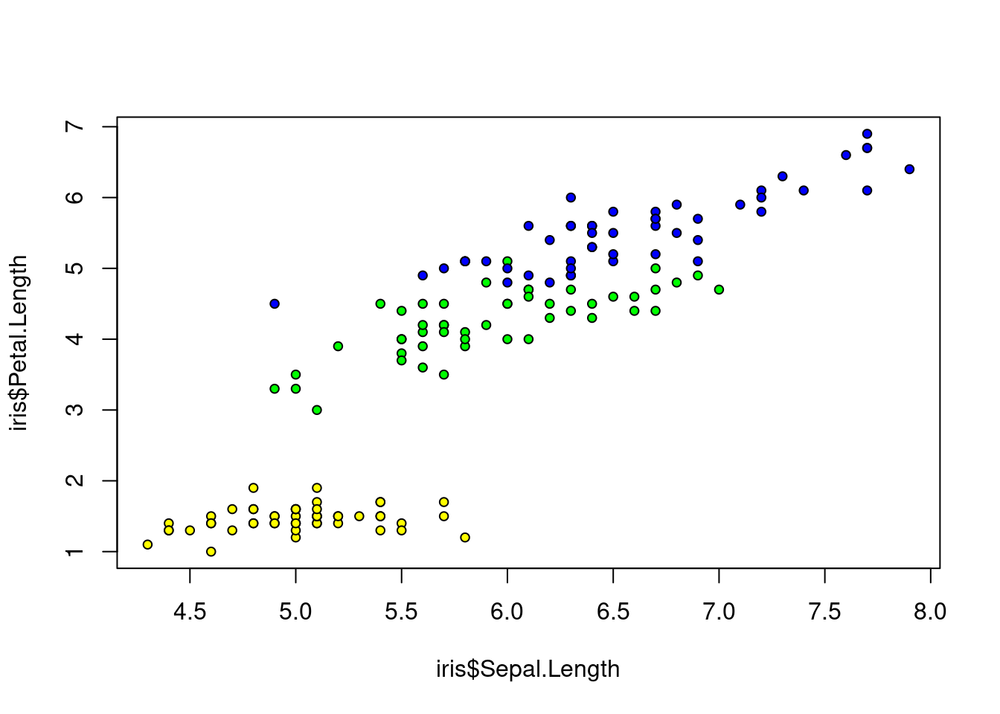
Muitos argumentos da função plot() são parâmetros gráficos (Seções 5.2 e 5.3).
5.1.2 Dispositivos de Tela
Quando você usa funções para gerar um gráfico, o R ou RStudio usa automaticamente um dispositivo de tela. No entanto, você pode abrir novas janelas com as seguintes funções:
X11()oux11()funcionam no Mac, Linux e Windows;quartz()funciona apenas no Mac;windows()funciona apenas no Windows.
?device # veja o help da função e as opções de devices
X11() # irá abrir uma janela nova
# vamos plotar o mesmo gráfico do exercício anterior
vcl <- c("yellow", "green", "blue")[as.numeric(iris$Species)] # cria um vetor de cores para cada linha em Iris segundo especie
# plota a figura
plot(iris$Sepal.Length, iris$Petal.Length, type = "p", pch = 21, bg = vcl, cex = 0.8)
# irá fechar essa nova janela
dev.off()
quartz() # num mac abre uma janela sem dar nenhum aviso (funciona melhor que X11() no Mac)
vcl <- c("yellow", "green", "blue")[as.numeric(iris$Species)] # cria um vetor de cores para cada linha em Iris segundo especie
# plota a figura
plot(iris$Sepal.Length, iris$Petal.Length, type = "p", pch = 21, bg = vcl, cex = 0.8)
dev.off() # fecha5.1.3 Listar e controlar dispositivos
Existem funções que permitem trabalhar com vários dispositivos ao mesmo tempo, controlando o uso dos dispositivos abertos. Pode haver, por exemplo, várias janelas diferentes mostrando gráficos diferentes durante um trabalho. As principais funções para trabalhar com dispositivos são:
A função
dev.list()lista todos os dispositivos abertos no momento (geralmente o dispositivo padrão, que é sempre o número 1, é ignorado na lista), retornando o número (ordem de abertura) e o nome de cada um;dev.cur()mostra qual o dispositivo que está ativo (em inglês, current). Se há vários abertos, haverá sempre um que estará ativo naquele momento e se você enviar uma figura, ela sairá neste dispositivo;dev.set()torna ativo um determinado dispositivo;dev.off()fecha o dispositivo atual ou vários. Esta é a função dessa lista que é a mais usada na prática.
# vamos primeiro fechar todos os dispositivos
dev.off(which = dev.list())
dev.list() # vai retornar NULL por não há dispositivos abertos
# vamos abrir vários dispositivos
X11() # primeira janela extra
X11() # segunda janela e mesma figura com cores diferentes
X11() # terceira janela e mesma figura com cores diferentes
# coloque e redimensione as janelas para ter as tres visiveis na tua tela e volte aqui.
# veja os dispositivos abertos
dev.list()
# qual o atual
dev.cur() # o ultimo que abrimos, né
dev.set(2)
# vamos mudar para o segundo e plotar algo
plot(iris$Sepal.Length, iris$Petal.Length, type = "p", cex = 0.8)
# vamos mudar para o terceiro e plotar outra coisa
dev.set(3)
dev.cur() # deve responder 3
vcl <- c("yellow", "green", "blue")[as.numeric(iris$Species)]
plot(iris$Sepal.Length, iris$Petal.Length, type = "p", pch = 21, bg = vcl, cex = 0.8)
# vamos mudar para o quarto e plotar a mesma coisa com outras cores
dev.set(4)
dev.cur() # deve responder 4
vcl <- c("red", "blue", "white")[as.numeric(iris$Species)]
plot(iris$Sepal.Length, iris$Petal.Length, type = "p", pch = 21, bg = vcl, cex = 0.8)
# vamos fechar o dispositivo atual
dev.cur()
dev.off()
dev.cur() # mudou automaticamente porque voce fechou o 4
dev.off() # mesma coisa fechou o ativo
dev.cur() # sobrou o 3
# fechar este também
dev.off()
dev.list() # nao tem mais nenhum aberto5.1.4 Dispositivos de arquivos
Há vários dispositivos para gerar arquivos com imagens.
As funções em geral têm o nome do tipo de arquivo gerado.
Vamos ver dois exemplos apenas, mas a mesma lógica se aplica a qualquer um dos dispositivos listados no ? dos dispositivos (execute o comando help('device') e veja a explicação sobre os dispositivos (devices)).
Essas funções são ótimas ferramentas para incluir nos seus scripts visando a produção de figuras para uma publicação. Procure na revista em que você deseja publicar seu artigo as especificações técnicas das figuras. Em seguida, cheque os parâmetros das funções gráficas (Seções 5.2 e 5.3) para você ser capaz de gerar figuras na especificação exata da revista selecionada.
5.1.5 Figuras vetoriais em pdf ou postscript
Em nossa opinião, as funções pdf() e postscript() são as mais importantes para a geração de figuras, porque elas geram arquivos de excelente qualidade por serem vetoriais.
Não há a necessidade de se definir a resolução, porque nesse tipo de imagem isso não existe.
# plotando a figura na tela é o que fazemos normalmente
vcl <- c("yellow", "green", "blue")[as.numeric(iris$Species)]
plot(iris$Sepal.Length, iris$Petal.Length, type = "p", pch = 21, bg = vcl, cex = 0.8)# salvando a figura num PDF
?pdf # veja o help dessa função e seus argumentos, especialmente width e height
# abre o dispositivo para pdf
pdf(file = "meupdf.pdf", width = lcm(15), height = lcm(10))
# lcm() apenas pega valores em cm e converte em polegadas que é a especificação padrão da funcao pdf. Portanto largura e altura de cada página do PDF é definida por esses argumentos
# plota a figura
plot(iris$Sepal.Length, iris$Petal.Length, type = "p", pch = 21, bg = vcl, cex = 0.8)
dev.off() # fecha o pdf
# só será possível ver o pdf se tiver fechado ele.
getwd() # o pdf foi gerado nessa pasta
# se voce incluir vários gráficos. O pdf irá gerar várias páginas ao mesmo tempo.
# abre o dispositivo para pdf
pdf(file = "meupdf2.pdf", paper = "a4")
# tamanho papel A4
# plota a figura 10 vezes
for (i in 1:10) {
plot(iris$Sepal.Length, iris$Petal.Length, type = "p", pch = 21, bg = vcl, cex = 0.8)
}
dev.off() # fecha o pdf
# veja que o arquivo 2 tem várias páginas5.1.6 Figuras raster
As funções jpeg(), png() e tiff() geram imagens em pixels, cuja qualidade depende muito da definição da resolução.
# formato jpeg sem controlar a resolucao (usando units='px' ou pixel)
# abre o dispositivo no formato desejado
jpeg(filename = "meujpeg.jpg", width = 600, height = 400, units = "px")
# plota alguma coisa
vcl <- c("yellow", "green", "blue")[as.numeric(iris$Species)]
plot(iris$Sepal.Length, iris$Petal.Length, type = "p", pch = 21, bg = vcl, cex = 0.8)
# fecha o jpeg
dev.off()
# ABRA O ARQUIVO E FAÇA UM ZOOM GRANDE
# note que os pixels são super visíveis
# AGORA MELHORANDO A RESOLUCAO
# formato jpeg com 300dpi
# abre o dispositivo no formato desejado
jpeg(filename = "meujpeg2.jpg", width = 15, height = 10, units = "cm", res = 300)
# plota alguma coisa
vcl <- c("yellow", "green", "blue")[as.numeric(iris$Species)]
plot(iris$Sepal.Length, iris$Petal.Length, type = "p", pch = 21, bg = vcl, cex = 0.8)
# fecha o jpeg
dev.off()DICA: Abra os três arquivos e compare a resolução deles, ampliando a imagem até visualizar o pixel.
Note que em um pdf você nunca verá o pixel.
Por isso, recomendamos que vocÊ trabalhe sempre com a função pdf().
5.2 Parâmetros gráficos, parte I - Margem, fonte, proporções
Para fazer boas figuras no R, você precisa muitas vezes controlar parâmetros gráficos dos dispositivos, como margem da figura, tamanho de fonte, tipo da fonte, distância das legendas dos eixos x e y, se essas legendas são horizontais ou verticais, o tipo símbolos dos pontos, as cores dos simbolos etc.
Você pode definir esses parâmetros diretamente nas funções gráficas de alto-nível highlevel plot> (..., <tag> = <value>), onde um valor (value) de um parâmetro (tag) pode ser adicionado diretamente como argumento de uma função de alto-nível.
Alguns desses parâmetros, no entanto, só podem ser definidos através da função par(), que também define parâmetros gráficos globais, isto é, se você alterar os parâmetros através dessa função, isso será alterado para todos os gráficos que forem abertos posteriormente durante a mesma sessão do R.
Esta mesma função também permite visualizar os parâmetros gráficos.
Leia atentamente o ? da função par().
Você pode salvar os parâmetros globais antes de alterá-los.
?par # veja o help dessa função# você pode ver os parâmetros padrão:
par() # vejo todos os parâmetros## $xlog
## [1] FALSE
##
## $ylog
## [1] FALSE
##
## $adj
## [1] 0.5
##
## $ann
## [1] TRUE
##
## $ask
## [1] FALSE
##
## $bg
## [1] "white"
##
## $bty
## [1] "o"
##
## $cex
## [1] 1
##
## $cex.axis
## [1] 1
##
## $cex.lab
## [1] 1
##
## $cex.main
## [1] 1.2
##
## $cex.sub
## [1] 1
##
## $cin
## [1] 0.15 0.20
##
## $col
## [1] "black"
##
## $col.axis
## [1] "black"
##
## $col.lab
## [1] "black"
##
## $col.main
## [1] "black"
##
## $col.sub
## [1] "black"
##
## $cra
## [1] 28.8 38.4
##
## $crt
## [1] 0
##
## $csi
## [1] 0.2
##
## $cxy
## [1] 0.02604167 0.06329114
##
## $din
## [1] 7 5
##
## $err
## [1] 0
##
## $family
## [1] ""
##
## $fg
## [1] "black"
##
## $fig
## [1] 0 1 0 1
##
## $fin
## [1] 7 5
##
## $font
## [1] 1
##
## $font.axis
## [1] 1
##
## $font.lab
## [1] 1
##
## $font.main
## [1] 2
##
## $font.sub
## [1] 1
##
## $lab
## [1] 5 5 7
##
## $las
## [1] 0
##
## $lend
## [1] "round"
##
## $lheight
## [1] 1
##
## $ljoin
## [1] "round"
##
## $lmitre
## [1] 10
##
## $lty
## [1] "solid"
##
## $lwd
## [1] 1
##
## $mai
## [1] 1.02 0.82 0.82 0.42
##
## $mar
## [1] 5.1 4.1 4.1 2.1
##
## $mex
## [1] 1
##
## $mfcol
## [1] 1 1
##
## $mfg
## [1] 1 1 1 1
##
## $mfrow
## [1] 1 1
##
## $mgp
## [1] 3 1 0
##
## $mkh
## [1] 0.001
##
## $new
## [1] FALSE
##
## $oma
## [1] 0 0 0 0
##
## $omd
## [1] 0 1 0 1
##
## $omi
## [1] 0 0 0 0
##
## $page
## [1] TRUE
##
## $pch
## [1] 1
##
## $pin
## [1] 5.76 3.16
##
## $plt
## [1] 0.1171429 0.9400000 0.2040000 0.8360000
##
## $ps
## [1] 12
##
## $pty
## [1] "m"
##
## $smo
## [1] 1
##
## $srt
## [1] 0
##
## $tck
## [1] NA
##
## $tcl
## [1] -0.5
##
## $usr
## [1] 0 1 0 1
##
## $xaxp
## [1] 0 1 5
##
## $xaxs
## [1] "r"
##
## $xaxt
## [1] "s"
##
## $xpd
## [1] FALSE
##
## $yaxp
## [1] 0 1 5
##
## $yaxs
## [1] "r"
##
## $yaxt
## [1] "s"
##
## $ylbias
## [1] 0.2op <- par() # pego todos os parâmetros
class(op) # isso é uma lista## [1] "list"names(op) # esses são os nomes dos parâmetros## [1] "xlog" "ylog" "adj" "ann" "ask" "bg"
## [7] "bty" "cex" "cex.axis" "cex.lab" "cex.main" "cex.sub"
## [13] "cin" "col" "col.axis" "col.lab" "col.main" "col.sub"
## [19] "cra" "crt" "csi" "cxy" "din" "err"
## [25] "family" "fg" "fig" "fin" "font" "font.axis"
## [31] "font.lab" "font.main" "font.sub" "lab" "las" "lend"
## [37] "lheight" "ljoin" "lmitre" "lty" "lwd" "mai"
## [43] "mar" "mex" "mfcol" "mfg" "mfrow" "mgp"
## [49] "mkh" "new" "oma" "omd" "omi" "page"
## [55] "pch" "pin" "plt" "ps" "pty" "smo"
## [61] "srt" "tck" "tcl" "usr" "xaxp" "xaxs"
## [67] "xaxt" "xpd" "yaxp" "yaxs" "yaxt" "ylbias"# a função par permite ver os valores atualmente definidos
par("family") # tipo de fonte nao tem## [1] ""par("mar") # margens da figura em número de linhas## [1] 5.1 4.1 4.1 2.1# a função para tem apenas 1 argumento além dos parâmetros gráficos
op2 <- par(no.readonly = TRUE)
class(op2)## [1] "list"# a diferença entre especificar no.readonly como verdadeiro (na primeria opção não especificada acima, o padrão é FALSE)
# é que a lista gerada pode ser usada para refazer alterações, ou seja, para resgatar os parâmetros gráficos padrão.
# ou seja, posso fazer:
par(op2) # para resgatar valores originais# mas não posso fazer o mesmo com a primeira opção
par(op) # porque op é uma lista diferentelength(op) == length(op2) # tem comprimentos diferentes## [1] FALSEidentical(op, op2) # nao são identicas## [1] FALSE5.2.1 Margem da figura
# Usando novamente o exemplo de iris
Sepalas <- iris$Sepal.Length
Petalas <- iris$Petal.Length
# especies como números
spp <- as.numeric(as.factor(iris$Species))
# uma cor para cada espécie
vcl <- c("yellow", "green", "blue")[spp]
# um simbolo para cada espécie
sbs <- c(21, 22, 23)[spp]
# plota a figura no dispositivo padrão
plot(Sepalas,
Petalas,
pch = sbs,
bg = vcl,
cex = 0.8
)
# ALTERANDO A MARGEM em NUMEROS DE LINHAS
# salva o valor padrao para resgatar ao final
op <- par(no.readonly = TRUE)
op$mar # esses são os valor atuais para Margem Inferior, Esquerda, Superior e Direita, respectivamente. #quando se referir a margem todos os parâmetros seguem a ordem ANTI-HORÁRIA iniciando na margem inferior## [1] 5.1 4.1 4.1 2.1# reduzindo as margem direita e superior em número de linhas
par(mar = c(5, 4, 1, 0.5))
plot(Sepalas,
Petalas,
pch = sbs,
bg = vcl,
cex = 0.8
)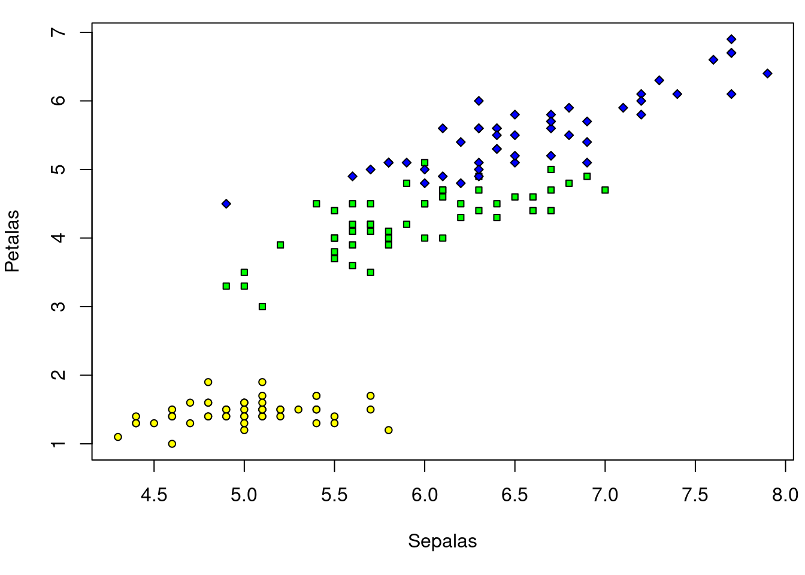
# voltando ao original
par(mar = op$mar)5.2.2 Aspecto dos eixos
op <- par(no.readonly = TRUE)
# POSICAO DAS LEGENDAS DOS EIXOS
par("mgp") # três valores que correspondem ao número de linhas para: (1) Titulo dos Eixos; (2) valores dos eixos; (3) linha dos eixos
# TAMANHO DE FONTE DOS EIXOS É RELATIVO AO VALOR DE FONTE PADRÃO
par("cex") # tamanho padrão
par("cex.lab") # número que multiplicado por op$cex indica o valor da fonte dos títulos dos eixos
par("cex.axis") # dos valores
# TAMANHO DAS BARRAS DE CADA VALOR
par("tck") # geralmente não tem padrão definido pois é extraído de outros valores automaticamente, mas você pode controlar isso
# DIMINUINDO A FONTE DISSO
par(cex.lab = 0.8, cex.axis = 0.7)
plot(Sepalas, Petalas, pch = sbs, bg = vcl, cex = 0.8)
# note que isso muda se eu alterar o tamanho de fonte padrão par(cex)
par(cex = 2, cex.lab = 0.8, cex.axis = 0.7)
plot(Sepalas, Petalas, pch = sbs, bg = vcl, cex = 0.8)
# APROXIMANDO
par(mgp = c(1.5, 0.5, 0))
plot(Sepalas, Petalas, pch = sbs, bg = vcl, cex = 0.8)
# e agora
par(tck = -0.01) # note o valor negativo
plot(Sepalas, Petalas, pch = sbs, bg = vcl, cex = 0.8)
par(tck = 0.01) # se colocar positivo
plot(Sepalas, Petalas, pch = sbs, bg = vcl, cex = 0.8)
par(op) # restaurando valores originais
plot(Sepalas, Petalas, pch = sbs, bg = vcl, cex = 0.8)5.2.3 Proporção dos eixos
op <- par(no.readonly = TRUE)
par("pty") # valor "m" maximiza a area disponível## [1] "m"plot(Sepalas, Petalas, pch = sbs, bg = vcl, cex = 0.8)
# agora mantendo a proporção dos eixos (sem esticar nenhum dos dois)
par(pty = "s")
plot(Sepalas, Petalas, pch = sbs, bg = vcl, cex = 0.8)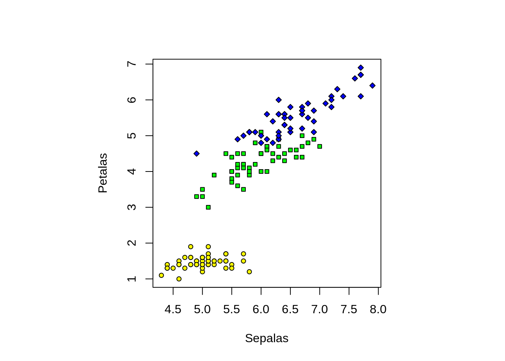
# se não notou diferença, expandir o dispositivo onde está desenhando a figura5.2.4 Múltiplas figuras na mesma tela ou página com mfrow() e mfcol()
Você pode colocar diferentes gráficos na mesma tela ou na mesma página de um pdf, por exemplo. Temos duas formas de fazer isso.
Os parâmetros mfrow e mfcol dividem os dispositivo em células de tamanhos idênticos.
Todas as figuras terão o mesmo tamanho.
A diferença entre os dois parâmetros é que mfrow() preenche o espaço por linhas, enquanto mfcol() preenche o espaço pelas colunas.
par(op)
par("mfrow") # o dispositivo não está divido: tem 1 linha e 1 coluna## [1] 1 1plot(Sepalas, Petalas, pch = sbs, bg = vcl, cex = 0.8)
# EXEMPLO 1
# duas figuras no mesmo dispositivo
par(mfrow = c(1, 2)) # dividir o dispositivo em 1 linha e duas colunas
# plota a primeira figura
plot(Sepalas, Petalas, pch = sbs, bg = vcl, cex = 0.8)
# plota a segunda sem cores
plot(Sepalas, Petalas, pch = sbs, bg = NULL, cex = 0.8)# EXEMPLO 2
par(mar = c(5.1, 4.1, 2.1, 2.1))
par(mfrow = c(2, 2)) # dividir o dispositivo em 2 linha e duas colunas
# plota quatro figuras identificas
for (f in 1:4) {
plot(Sepalas, Petalas, pch = sbs, bg = NULL, cex = 0.8)
# adiciona uma letra para você ver a ordem e comparar com o exemplo 3
mtext(LETTERS[f], side = 3, line = 0, adj = 0, font = 2, col = "red") # esta é uma função de baixo nível que falaremos depois
}
# EXEMPLO 3
par(mfcol = c(2, 2)) # mesma coisa mas preenchendo por colunas (compare com a figura acima)
for (f in 1:4) {
plot(Sepalas, Petalas, pch = sbs, bg = NULL, cex = 0.8)
mtext(LETTERS[f], side = 3, line = 0, adj = 0, font = 2, col = "red")
}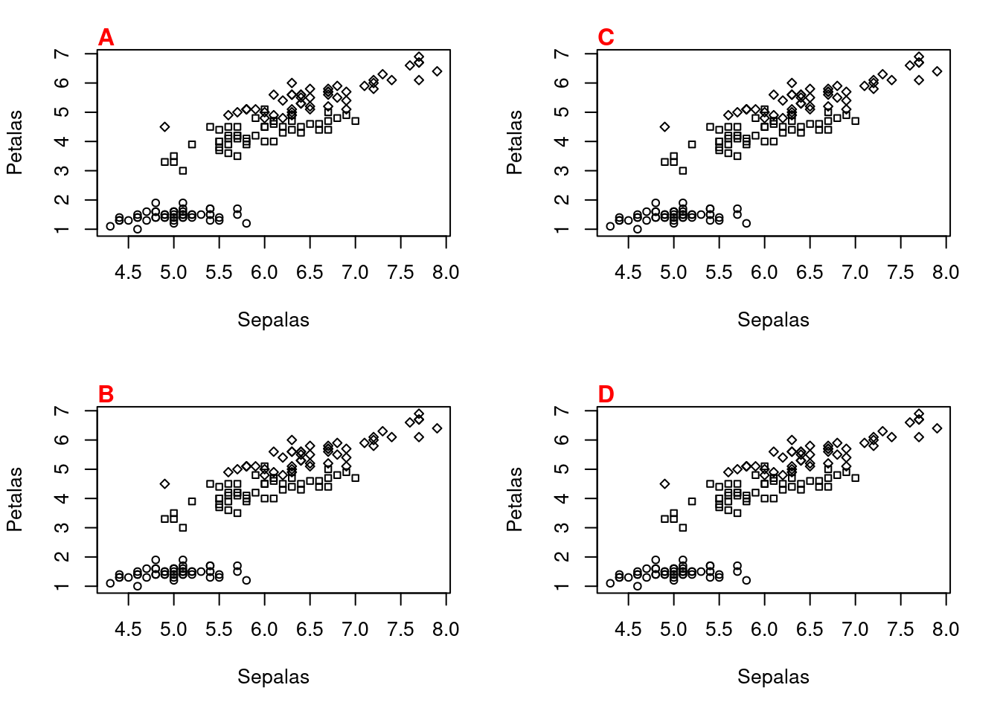
# colocando exemplo 2 e 3 num pdf
pdf(file = "meuPDFmfrow.pdf", paper = "a4")
# EXEMPLO 2 expandido
par(mfrow = c(3, 2)) # tres linhas e duas colunas
for (f in 1:6) {
plot(Sepalas, Petalas, pch = sbs, bg = NULL, cex = 0.8)
mtext(LETTERS[f], side = 3, line = 0, adj = 0, font = 2, col = "red")
}
# EXEMPLO 3 expandido
par(mfcol = c(3, 2))
for (f in 1:6) {
plot(Sepalas, Petalas, pch = sbs, bg = NULL, cex = 0.8)
mtext(LETTERS[f], side = 3, line = 0, adj = 0, font = 2, col = "red")
}
dev.off()5.2.5 Múltiplas figuras na mesma image usando a função layout()
A função layout() também permite dividir um dispositivo para múltiplas figuras, mas de uma forma muito mais complexa.
?layout # veja o help dessa função
# voce precisa definir uma matriz que indica:
# 1) o numero de figuras (valores da matriz)
# 2) a posição das figuras (numero de linhas e colunas)
# por exemplo, suponha que queremos plotar 3 figuras:
# 1 preenchendo a largura da página e metade da altura
# 2 outras figuras preenchendo a outra metada da altura# neste caso a figura 1 ira ocupar dois espacos
mm <- matrix(c(1, 1, 2, 3), nrow = 2, ncol = 2, byrow = T)
mm # a figura 1 irá ocupar a posicao do numero 1 na matriz
# a figura 2 irá ocupar a posicao do numero 2 nessa matriz
# a figura 3 irá ocupar a posicao do numero 3 dessa matriz
# a largura de cada coluna e linha é especificada pelos argumentos widths e heights e usaremos a função lcm() para especificar isso em centímetros
# divide o dispositivo
ml <- layout(mm, widths = rep(lcm(5), ncol(mm)), heights = rep(lcm(5), nrow(mm)))
# mostra a divisao feita
layout.show(ml)
# plota a primeira figura
plot(Sepalas, Petalas, pch = sbs, bg = vcl, cex = 0.8)
# a segunda
plot(Sepalas, Petalas, pch = sbs, bg = vcl, cex = 0.8)
# a terceira
plot(Sepalas, Petalas, pch = sbs, bg = vcl, cex = 0.8)Podemos salvar essas figuras em um pdf:
pdf(file = "meuPDFlayout.pdf", paper = "letter")
layout(mm, widths = rep(lcm(8), ncol(mm)), heights = rep(lcm(8), nrow(mm)))
# plota as tres figuras fazendo uma iteracao
for (f in 1:3) {
plot(Sepalas, Petalas, pch = sbs, bg = NULL, cex = 0.8)
mtext(LETTERS[f], side = 3, line = 0, adj = 0, font = 2, col = "red")
}
dev.off() # fecha o pdf5.3 Parâmetros gráficos, parte II - Símbolos e cores
Você pode fazer o que quiser na produção de um gráfico no R.
Isso requer conhecer bem os parâmetros gráficos que já apresentamos de forma geral anteriormente (ver seção 5.2).
Aqui apresentamos alguns parâmetros de uso comum pelas funções gráficas de alto (Seção 5.4) e baixo nível (seção 5.5), que definem símbolos e cores.
Você viu isso se leu o ? da função par() e entendeu o que ela faz.
Em gráficos de dispersão e/ou na necessidade de colocar qualquer símbolo em um gráfico qualquer, precisamos saber como definir símbolos, suas cores e seus tamanhos. Os parâmetros gráficos que fazem isso são principalmente os seguintes:
pch- define o tipo de símbolo para pontos;lty- define o tipo de símbolo para linhas;colebg- respectivamente definem a cor de linhas e o “recheio” do ponto de símbolos, gráficos, polígonos etc;cex- define o tamanho de símbolos e texto;lwd- espessura das linhas.
5.3.1 Tipo de símbolo - pch
Nós queremos símbolos, em geral, para adicionar em um gráfico os pontos referentes às nossas unidades amostrais.
Portanto, esse tipo de símbolo no R é chamado de points, e já vimos a função de baixo-nível points(), que depende desse argumento ou parâmetro.
O argumento pch pode ser um número3, que especifica um símbolo, ou símbolos de um único caractere [e.g. c("A", "*","&", "?")].
# veja o definido como parâmetro global
par("pch")
# o que isso quer dizer?
# vamos usar a função example()
?example # se quiser saber o que isso faz
# quando digitar o comando abaixo,
# vai precisar RESPONDER NO CONSOLE para prosseguir.
example("points")
# pare na terceira figura que esse exemplo gera.
par("pch") # este valor corresponde ao símbolo nessa figura.
# note que os símbolos de 21:25 permitem definir cor de linha e de recheiro, os demais apenas uma única cor# vamos gerar alguns exemplos com os dados de iris
class(iris)## [1] "data.frame"dim(iris)## [1] 150 5colnames(iris)## [1] "Sepal.Length" "Sepal.Width" "Petal.Length" "Petal.Width" "Species"# com a definicao padrão de pch
par("pch")## [1] 1Sepalas <- iris$Sepal.Length
Petalas <- iris$Petal.Length
plot(Sepalas, Petalas)# colocando todas com um único símbolo diferente
plot(Sepalas, Petalas, pch = 25)# colocando cada espécie com um único símbolo
# neste caso o argumento pch deve ter um vetor do número de linhas em iris, se for menor, pela regra da reciclagem, ele irá repetir os símbolo sem estar relacionado à coluna Species, que define qual linha é de qual espécie.
# então se eu definir apenas três simbolos, um para cada espécie:
plot(Sepalas, Petalas, pch = c("A", "&", "+"))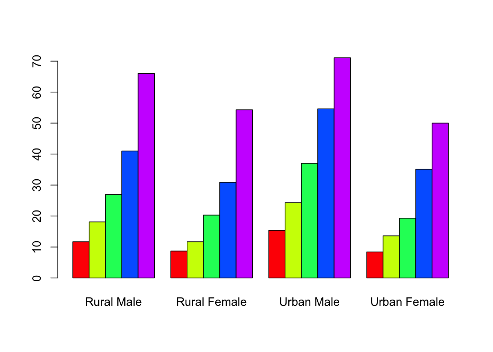
# eles vao aparecer misturados, isso não está de acordo com as espécies
# uma forma rápida de fazer isso, tendo em vista que o pch pode ser um valor numérico,
# é transformar o nome das minhas especies em números.
# Eu posso fazer isso se convertendo um fator para número, pois nele as categorias estão explicitamente definidas
spp <- iris$Species
class(spp) # já é um fator## [1] "factor"# note que isso gera muitos NAs, já vimos isso antes
as.numeric(as.vector(spp))## Warning: NAs introduced by coercion## [1] NA NA NA NA NA NA NA NA NA NA NA NA NA NA NA NA NA NA NA NA NA NA NA NA NA
## [26] NA NA NA NA NA NA NA NA NA NA NA NA NA NA NA NA NA NA NA NA NA NA NA NA NA
## [51] NA NA NA NA NA NA NA NA NA NA NA NA NA NA NA NA NA NA NA NA NA NA NA NA NA
## [76] NA NA NA NA NA NA NA NA NA NA NA NA NA NA NA NA NA NA NA NA NA NA NA NA NA
## [101] NA NA NA NA NA NA NA NA NA NA NA NA NA NA NA NA NA NA NA NA NA NA NA NA NA
## [126] NA NA NA NA NA NA NA NA NA NA NA NA NA NA NA NA NA NA NA NA NA NA NA NA NA# mas isso gera números por spp é um fator
as.numeric(spp)## [1] 1 1 1 1 1 1 1 1 1 1 1 1 1 1 1 1 1 1 1 1 1 1 1 1 1 1 1 1 1 1 1 1 1 1 1 1 1
## [38] 1 1 1 1 1 1 1 1 1 1 1 1 1 2 2 2 2 2 2 2 2 2 2 2 2 2 2 2 2 2 2 2 2 2 2 2 2
## [75] 2 2 2 2 2 2 2 2 2 2 2 2 2 2 2 2 2 2 2 2 2 2 2 2 2 2 3 3 3 3 3 3 3 3 3 3 3
## [112] 3 3 3 3 3 3 3 3 3 3 3 3 3 3 3 3 3 3 3 3 3 3 3 3 3 3 3 3 3 3 3 3 3 3 3 3 3
## [149] 3 3# então se eu quero os símbolos 22,23,25 para representar minhas espécies, eu uso esses números para pegar esses valores pelos índices de um vetor:
pch.das.spp <- c(21, 23, 25)[as.numeric(spp)]
pch.das.spp## [1] 21 21 21 21 21 21 21 21 21 21 21 21 21 21 21 21 21 21 21 21 21 21 21 21 21
## [26] 21 21 21 21 21 21 21 21 21 21 21 21 21 21 21 21 21 21 21 21 21 21 21 21 21
## [51] 23 23 23 23 23 23 23 23 23 23 23 23 23 23 23 23 23 23 23 23 23 23 23 23 23
## [76] 23 23 23 23 23 23 23 23 23 23 23 23 23 23 23 23 23 23 23 23 23 23 23 23 23
## [101] 25 25 25 25 25 25 25 25 25 25 25 25 25 25 25 25 25 25 25 25 25 25 25 25 25
## [126] 25 25 25 25 25 25 25 25 25 25 25 25 25 25 25 25 25 25 25 25 25 25 25 25 25# posso usar isso como argumento em plot:
plot(Sepalas, Petalas, pch = pch.das.spp)# pronto cada espécie é um símbolo diferente5.3.2 Tamanho dos pontos - cex
O argumento genérico cex especifica o tamanho dos pontos relativo ao padrão do dispositivo.
Aceita um valor numérico que é multiplicado pelo valor do seu dispositivo.
O padrão geral é 1, isto é, 100% do tamanho.
Se colocar 0.5 teremos 50%; se 1.5, teremos 150% do tamanho padrão.
# da etapa anterior
pch.das.spp <- c(21, 23, 25)[as.numeric(spp)]
# temos nosso gráfico com símbolos
plot(Sepalas, Petalas, pch = pch.das.spp)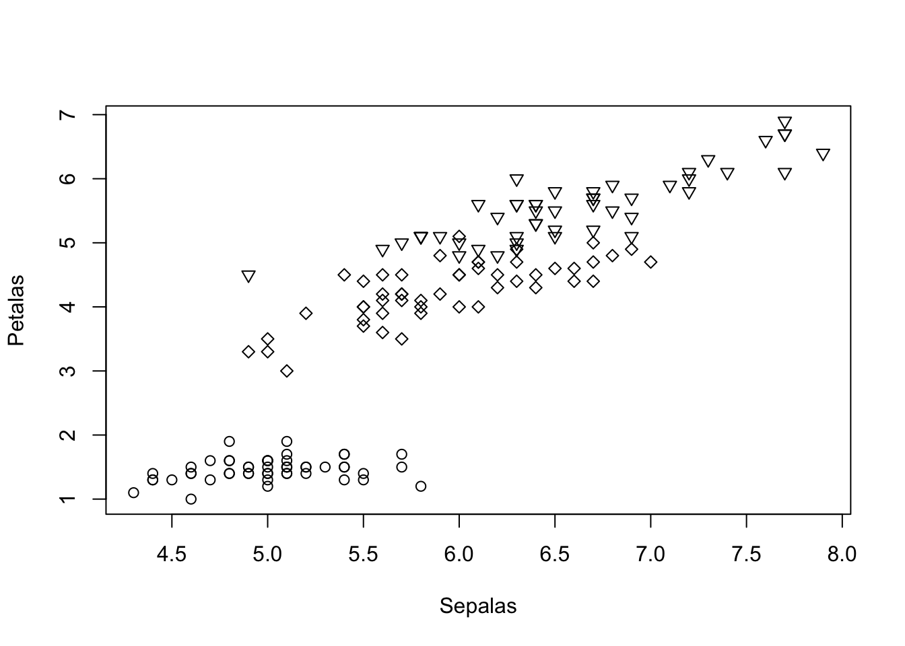
# mudando o tamanho de todos os simbolos
plot(Sepalas, Petalas, pch = pch.das.spp, cex = 0.5)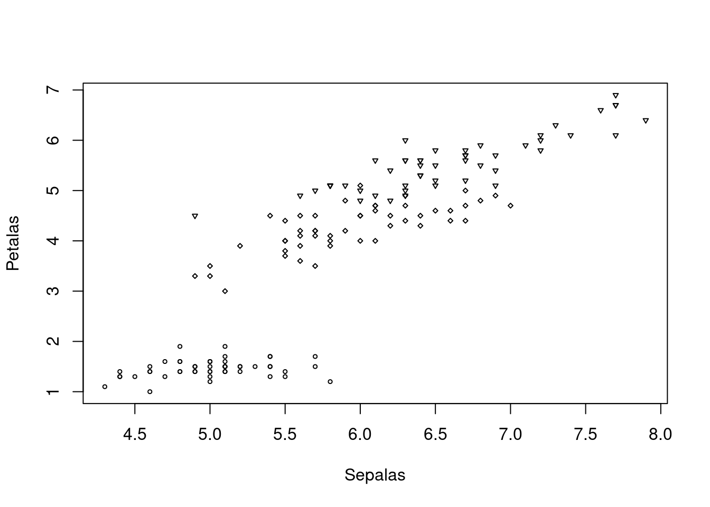
# para maior
plot(Sepalas, Petalas, pch = pch.das.spp, cex = 1.5)# um tamanho diferente por ponto (especie)
tm <- c(0.5, 1, 1.5)[as.numeric(spp)]
tm## [1] 0.5 0.5 0.5 0.5 0.5 0.5 0.5 0.5 0.5 0.5 0.5 0.5 0.5 0.5 0.5 0.5 0.5 0.5
## [19] 0.5 0.5 0.5 0.5 0.5 0.5 0.5 0.5 0.5 0.5 0.5 0.5 0.5 0.5 0.5 0.5 0.5 0.5
## [37] 0.5 0.5 0.5 0.5 0.5 0.5 0.5 0.5 0.5 0.5 0.5 0.5 0.5 0.5 1.0 1.0 1.0 1.0
## [55] 1.0 1.0 1.0 1.0 1.0 1.0 1.0 1.0 1.0 1.0 1.0 1.0 1.0 1.0 1.0 1.0 1.0 1.0
## [73] 1.0 1.0 1.0 1.0 1.0 1.0 1.0 1.0 1.0 1.0 1.0 1.0 1.0 1.0 1.0 1.0 1.0 1.0
## [91] 1.0 1.0 1.0 1.0 1.0 1.0 1.0 1.0 1.0 1.0 1.5 1.5 1.5 1.5 1.5 1.5 1.5 1.5
## [109] 1.5 1.5 1.5 1.5 1.5 1.5 1.5 1.5 1.5 1.5 1.5 1.5 1.5 1.5 1.5 1.5 1.5 1.5
## [127] 1.5 1.5 1.5 1.5 1.5 1.5 1.5 1.5 1.5 1.5 1.5 1.5 1.5 1.5 1.5 1.5 1.5 1.5
## [145] 1.5 1.5 1.5 1.5 1.5 1.5plot(Sepalas, Petalas, pch = pch.das.spp, cex = tm)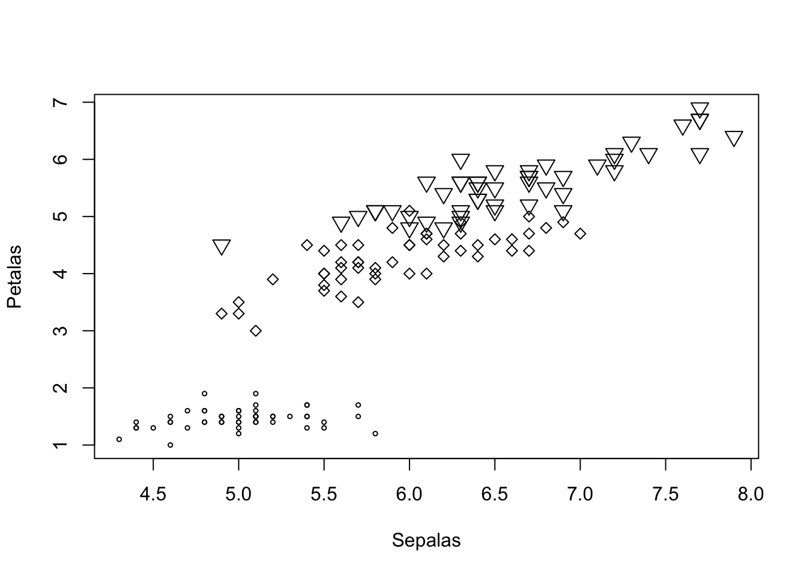
5.3.3 Linhas
Os argumentos lwd e lty controlam a espessura e o tipo das linhas, respectivamente.
data("AirPassengers") # veja esse conjunto de dados com ?datasets
class(AirPassengers)## [1] "ts"plot(AirPassengers, ylab = "Número de Passageiros")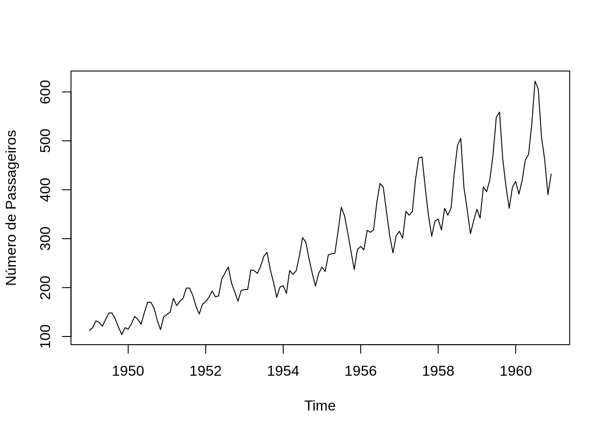
# mudando o tipo de linha
plot(AirPassengers, ylab = "Número de Passageiros", lty = "dotted")# outro tipo
plot(AirPassengers, ylab = "Número de Passageiros", lty = "dotdash")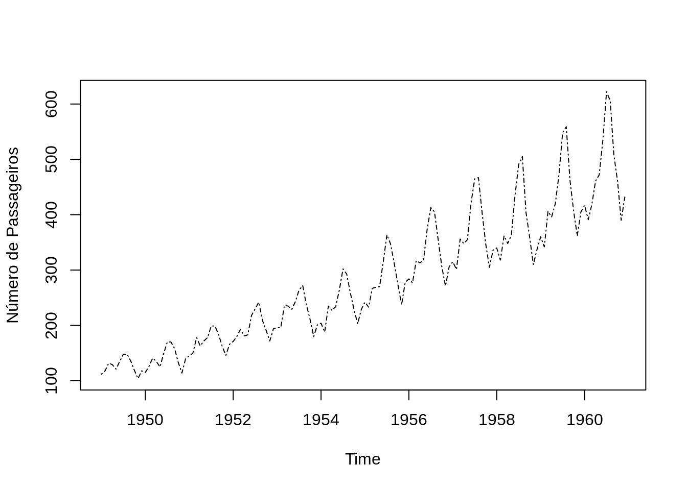
# mudando a cor e espessura
plot(AirPassengers, ylab = "Número de Passageiros", lty = "dashed", col = "red", lwd = 2)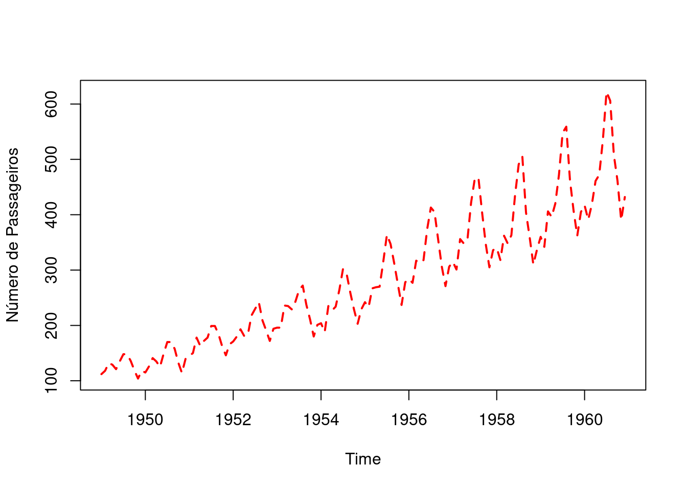
5.3.4 Cores de símbolos - col e bg
O argumento col define cores para os símbolos. No caso de símbolos de uma única cor, utilizamos apenas este argumento.
Já o argumento bg define as cores do preenchimento dos símbolos.
# o que definimos antes são símbolos que permitem definir cores para preenchimento e linha:
pch.das.spp <- c(21, 23, 25)[as.numeric(spp)]
# temos nosso gráfico com símbolos
plot(Sepalas, Petalas, pch = pch.das.spp)# vamos adicionar as cores seguindo o mesmo raciocínio
cores.spp <- c("red", "blue", "yellow")[as.numeric(spp)]
cores.spp## [1] "red" "red" "red" "red" "red" "red" "red" "red"
## [9] "red" "red" "red" "red" "red" "red" "red" "red"
## [17] "red" "red" "red" "red" "red" "red" "red" "red"
## [25] "red" "red" "red" "red" "red" "red" "red" "red"
## [33] "red" "red" "red" "red" "red" "red" "red" "red"
## [41] "red" "red" "red" "red" "red" "red" "red" "red"
## [49] "red" "red" "blue" "blue" "blue" "blue" "blue" "blue"
## [57] "blue" "blue" "blue" "blue" "blue" "blue" "blue" "blue"
## [65] "blue" "blue" "blue" "blue" "blue" "blue" "blue" "blue"
## [73] "blue" "blue" "blue" "blue" "blue" "blue" "blue" "blue"
## [81] "blue" "blue" "blue" "blue" "blue" "blue" "blue" "blue"
## [89] "blue" "blue" "blue" "blue" "blue" "blue" "blue" "blue"
## [97] "blue" "blue" "blue" "blue" "yellow" "yellow" "yellow" "yellow"
## [105] "yellow" "yellow" "yellow" "yellow" "yellow" "yellow" "yellow" "yellow"
## [113] "yellow" "yellow" "yellow" "yellow" "yellow" "yellow" "yellow" "yellow"
## [121] "yellow" "yellow" "yellow" "yellow" "yellow" "yellow" "yellow" "yellow"
## [129] "yellow" "yellow" "yellow" "yellow" "yellow" "yellow" "yellow" "yellow"
## [137] "yellow" "yellow" "yellow" "yellow" "yellow" "yellow" "yellow" "yellow"
## [145] "yellow" "yellow" "yellow" "yellow" "yellow" "yellow"plot(Sepalas, Petalas, pch = pch.das.spp, bg = cores.spp)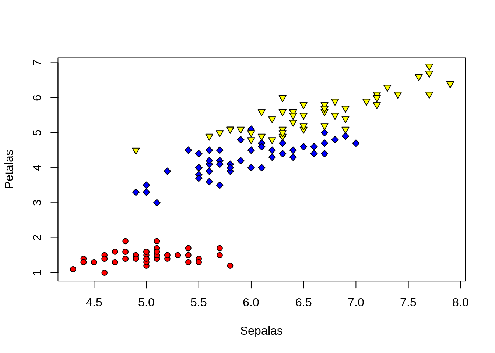
# podemos mudar a cor da linha desses simbolos (todos para verde pela regra da reciclagem especifico uma única vez)
plot(Sepalas, Petalas, pch = pch.das.spp, bg = cores.spp, col = "green")# mudando simbolos
nsb <- c("*", "#", "+")[as.numeric(spp)]
plot(Sepalas, Petalas, pch = nsb, bg = cores.spp)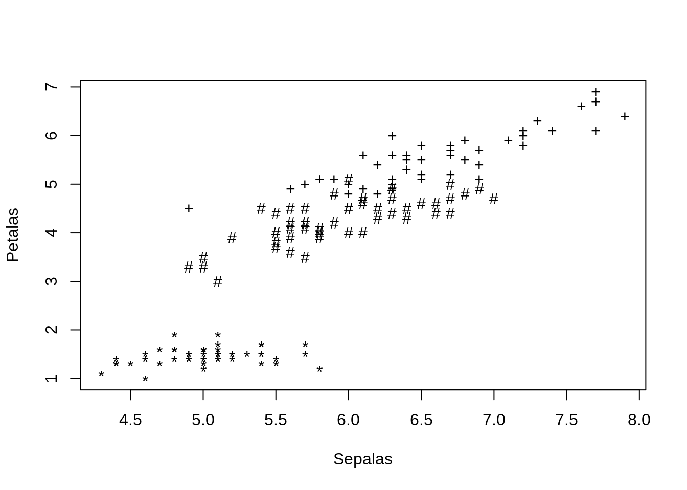
# note que apesar de bg estar especificando cores as cores nao foram adicionadas, porque colocamos no argumento de preenchimento.
# Mudando:
plot(Sepalas, Petalas, pch = nsb, col = cores.spp)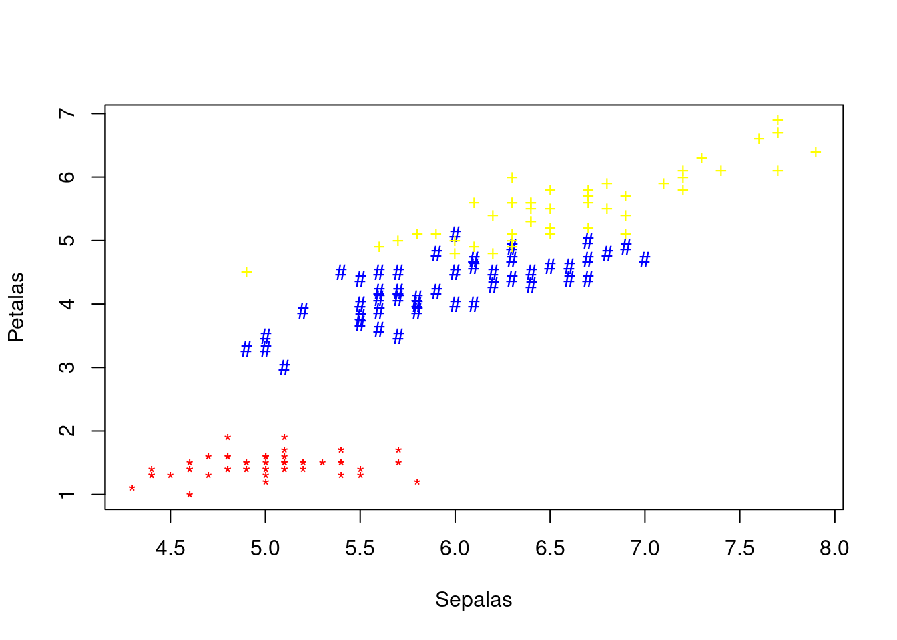
5.3.5 Funções que definem cores
Cores podem ser definidas por palavras ou por códigos.
As funções colors() ou colours() listam cores pelo nome.
# lista todas as cores disponíveis pelo nome
colors()
# nossa tem 657 cores. Difícil, né?
# reduz para as mais distintas
colors(distinct = TRUE)
# ainda 502# eu posso pegar ou buscar por cores
ascores <- colors(distinct = TRUE)
vl <- grep("blue", ascores)
ascores[vl]
# 60 nomes que contém a palavra azul
# vamos ver todas as coresem umpdf longo
# vamos plotar pizzas coloridas com 10 cores cada
# 4 pizzas por página?pie # veja o help dessa função# abre um PDF
pdf("cores.pdf", width = lcm(29), height = lcm(21))
# vamos dividir o dispositivo em 2 colunas e 3 linhas (e diminuir a margem)
par(mfrow = c(2, 2), mar = c(3, 3, 3, 3), cex = 0.7)
ln <- length(ascores)
ln # sao 502 cores
ceiling(ln / 10) # , entao serao 51 pizzas
# plota cada pizza fazendo uma iteração:
idx <- 0 # o objeto nullo para usar de indice na iteracao para fazer de 10 em 10
for (p in 1:ceiling(ln / 10)) {
de <- idx + 1 # cor do indice idx
ate <- idx + 10 # ate cor do indice idx+10
cls <- ascores[de:ate] # cores da pizza da iteracao p
pie(rep(1, 10), col = cls, labels = cls)
idx <- ate
}
dev.off() # fecha o pdfAs funções rainbow() ou terrain.colors() geram gradientes de cores em um padrão definido.
# 10 cores do arco-iris
cls <- rainbow(n = 10)
pie(rep(1, 10), col = cls, labels = cls)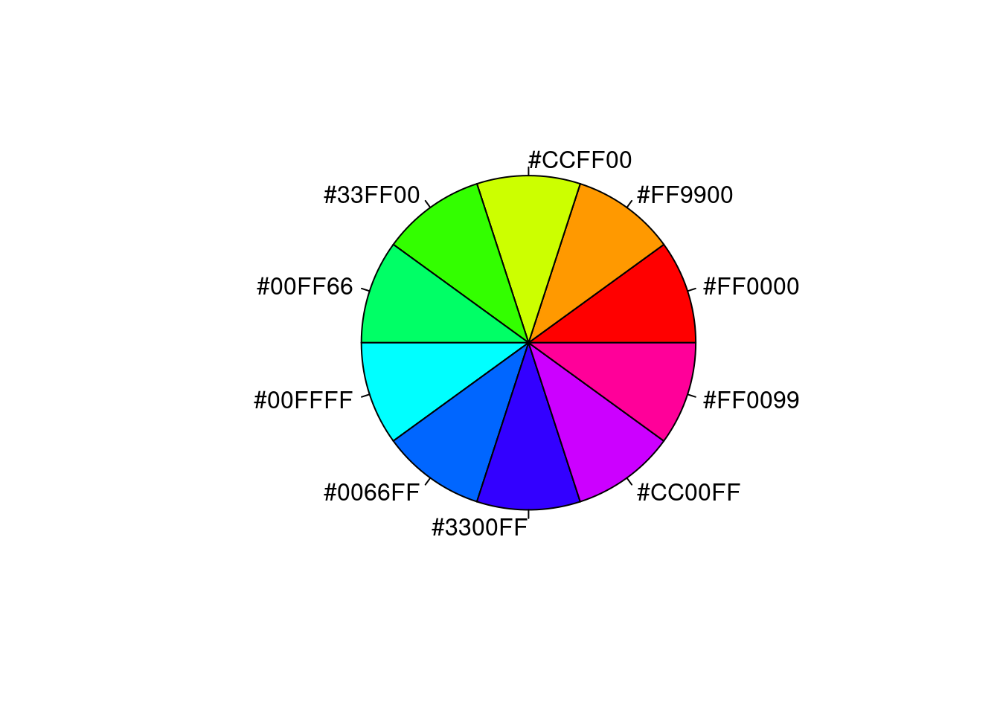
# 12 cores do arco-iris com 50% de transparencia
cls <- rainbow(n = 12, alpha = 0.5)
pie(rep(1, 12), col = cls, labels = cls)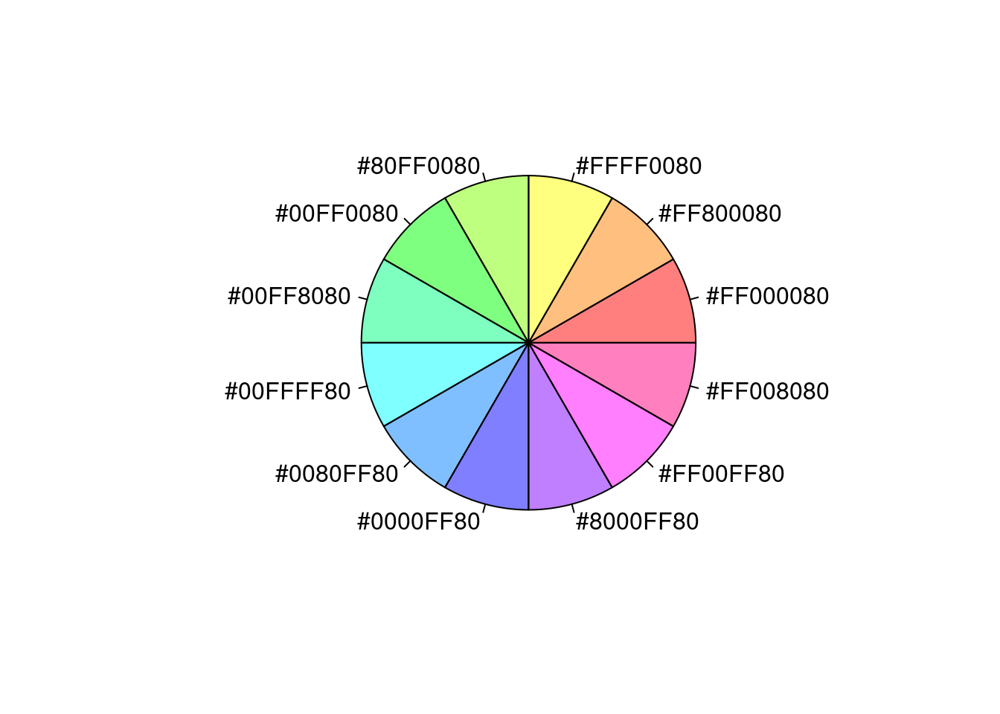
# 12 cores do arco-iris, limitando o espectro
cls <- rainbow(n = 12, start = 0.1, end = 0.9)
pie(rep(1, 12), col = cls, labels = cls)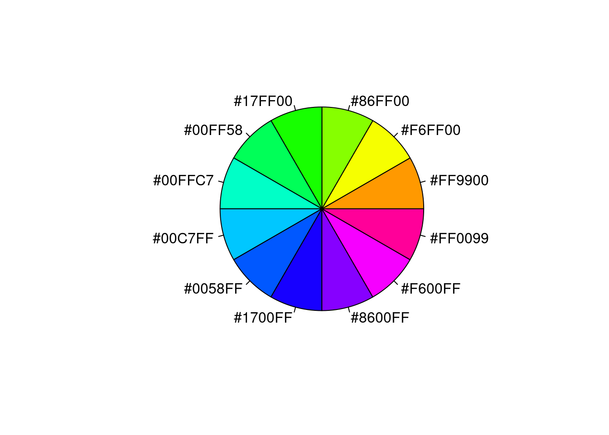
# 10 cores quentes
cls <- heat.colors(n = 10, alpha = 1)
pie(rep(1, 10), col = cls, labels = cls)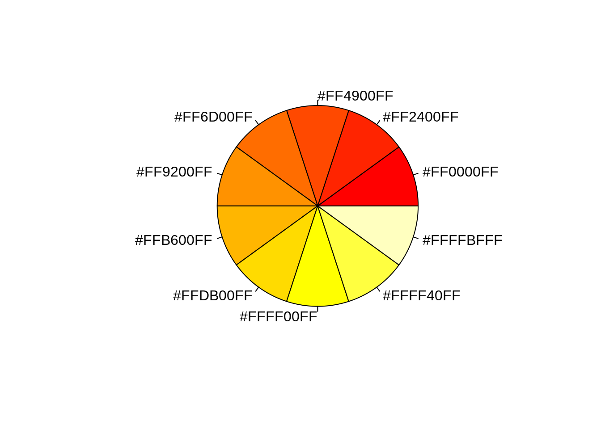
# 20 cores topográficas
cls <- topo.colors(n = 20, alpha = 1)
pie(rep(1, 20), col = cls, labels = cls)# ou melhor
cls <- terrain.colors(n = 20, alpha = 1)
pie(rep(1, 20), col = cls, labels = cls)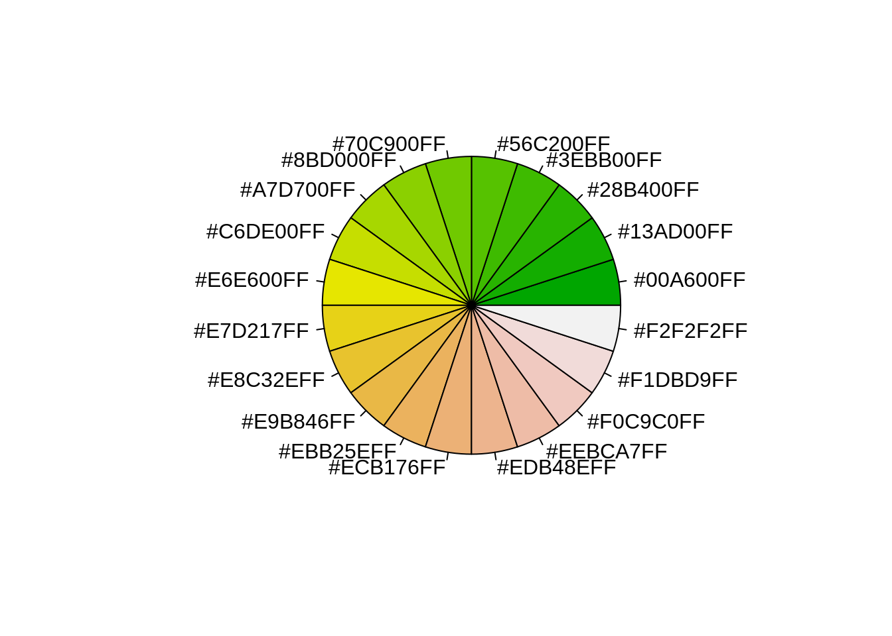
As funções rgb() ou hsv() geram qualquer tipo de cor para ser utilizados nos gráficos.
?rgb # veja o help dessa funcao e veja as funcoes sob See Also# podemos entender melhor fazendo o caminho inverso
defs <- col2rgb("yellow") # extraimos as especificacoes de amarelo (cores primárias ) pela palavra
defs| red | 255 |
| green | 255 |
| blue | 0 |
# sem cor temos preto
cls <- rgb(red = 0, green = 0, blue = 0) # fazemos amarelo
pie(1, col = cls, labels = cls)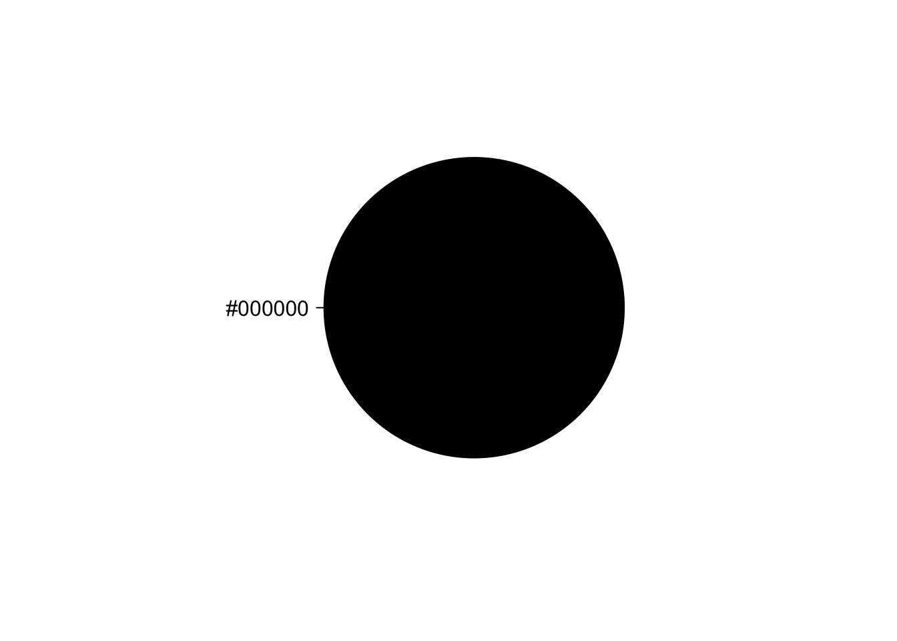
# fazemos amarelo
cls <- rgb(red = 255, green = 255, blue = 0, maxColorValue = 255)
pie(1, col = cls, labels = cls)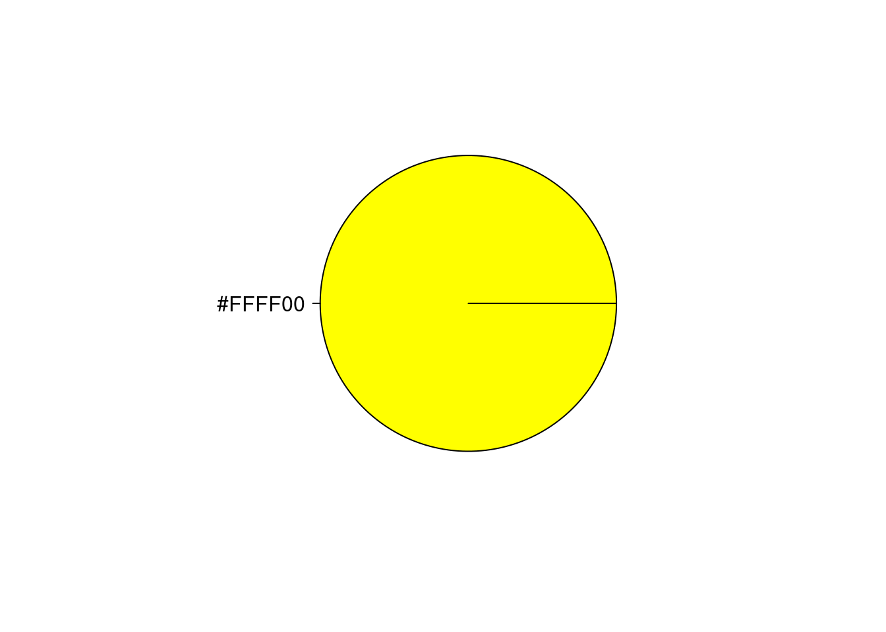
# tiramos verde
cls <- rgb(red = 255, green = 160, blue = 0, maxColorValue = 255)
pie(1, col = cls, labels = cls)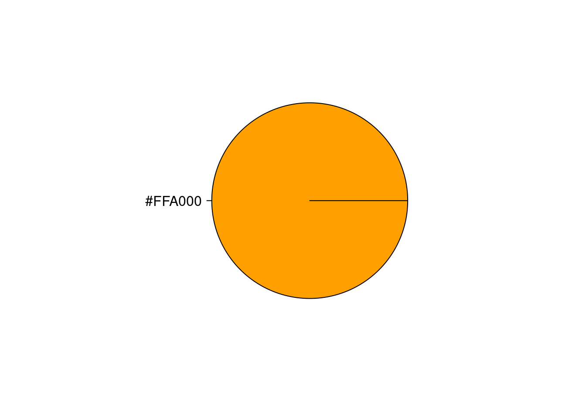
# tiramos verde e adicionamos azul
cls <- rgb(red = 255, green = 160, blue = 255, maxColorValue = 255)
pie(1, col = cls, labels = cls)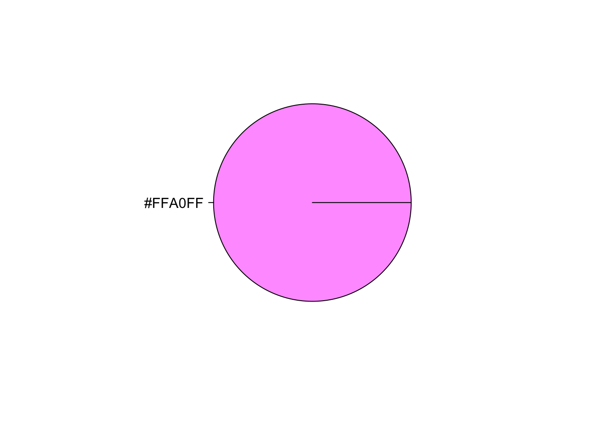
# tiramos azul-escuro (mais perto de 0)
cls <- rgb(red = 0, green = 0, blue = 150, maxColorValue = 255)
pie(1, col = cls, labels = cls)# tiramos azul
cls <- rgb(red = 0, green = 0, blue = 255, maxColorValue = 255)
pie(1, col = cls, labels = cls)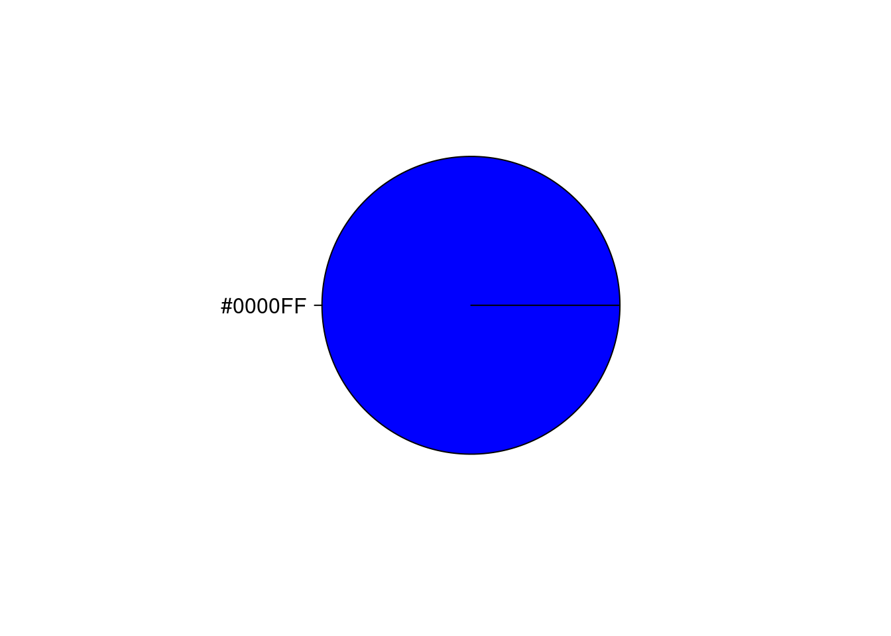
5.4 Funções gráficas de alto nível
Funções gráficas de alto-nível (highlevel plots) são as funções que usamos para gerar os gráficos.
Além da função genérica plot(), veremos apenas alguns poucos exemplos, mas existem diversas funções gráficas de alto nível, muitas das quais dependem de pacotes específicos.
Existem inúmeras outras funções de alto-nível, algumas do R-base, outras geradas por colaboradores na forma de pacotes do R.
A função plot() entende algumas dessas outras funções dos pacotes automaticamente, dependendo da classe do objeto, e você sequer precisa usar o nome específico (veja o exemplo em plot.phylo(), abaixo).
No ? do pacote graphics, você encontra ajuda para funções gráficas em geral:
demo("graphics") # execute este demostrativo - lembre-se de interagir no console do R para as figuras
?graphics # veja o help dessa função para alguns gráficos5.4.1 plot() - uma função genérica
A função plot() é a principal para produção de gráficos porque é uma função genérica que irá gerar um gráfico dependendo da classe do objeto. Em muitos casos, não precisamos usar outras funções, porque a depender da classe do objeto, esta função automaticamente entenderá o que você precisa.
?plot # veja o help dessa funçãoSuponha que tenhamos um vetor simples e numérico chamado vv:
vv <- 1:10
# Qual e a classe desse vetor?
class(vv)## [1] "integer"Vamos plotá-lo:
plot(vv)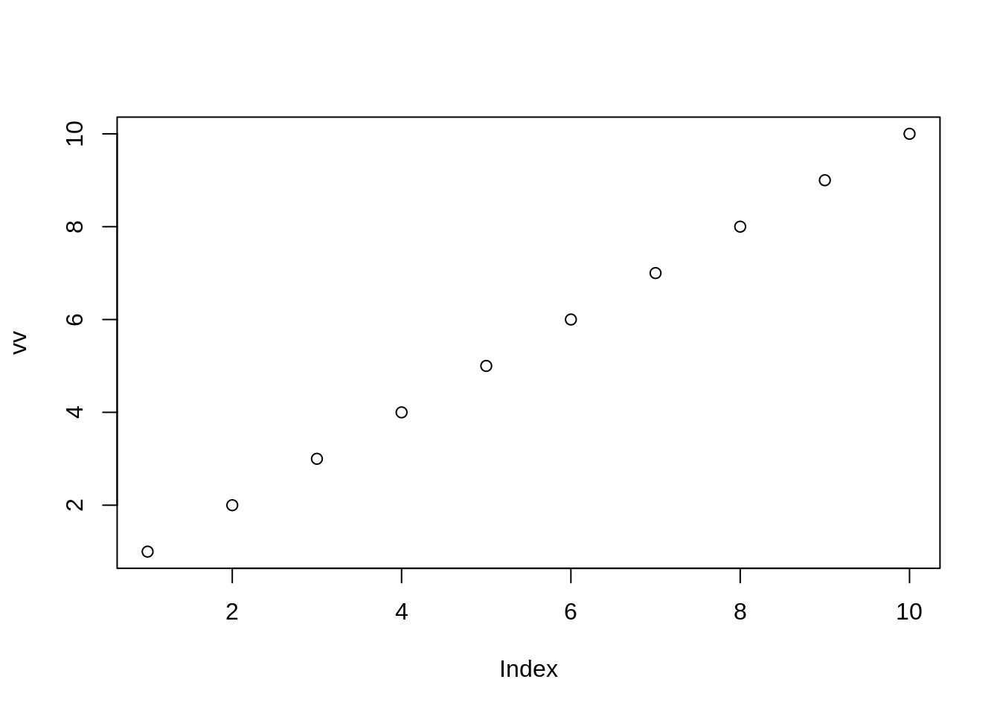
Vamos mudar alguns argumentos da função plot().
Acrescentaremos um tipo diferente de ponto (argumento pch), uma cor vermelha para o fundo do ponto (argumento bg), um novo texto para o eixo x (argumento xlab), um novo texto para o eixo y (argumento ylab), e um título para o plot (argumento main):
plot(vv, pch = 21, bg = "red", xlab = "índice do vetor", ylab = "valor do vetor", main = "Plotando um vetor")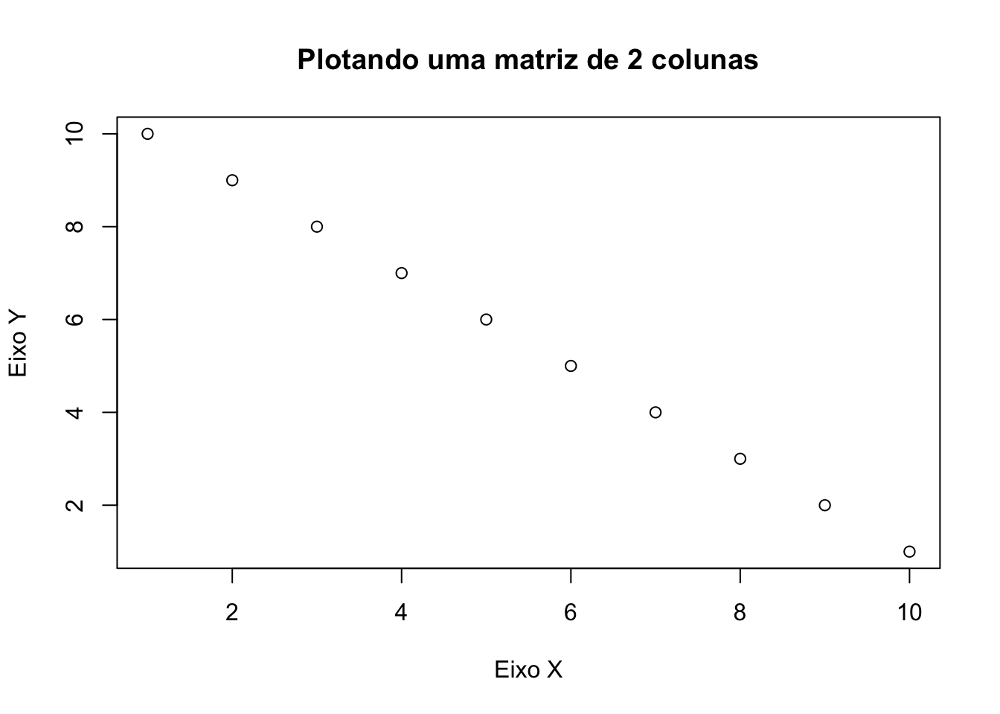
Vamos trabalhar agora com uma matriz de duas colunas:
xx <- 1:10 # um vetor
yy <- 10:1 # o mesmo vetor invertido
mm <- cbind(xx, yy) # junta em uma matrix
# Qual a classe dessa matriz?
class(mm)## [1] "matrix" "array"Vamos utilizar a matriz de duas colunas mm diretamente como primeiro argumento da função plot():
plot(mm, xlab = "Eixo X", ylab = "Eixo Y", main = "Plotando uma matriz de 2 colunas")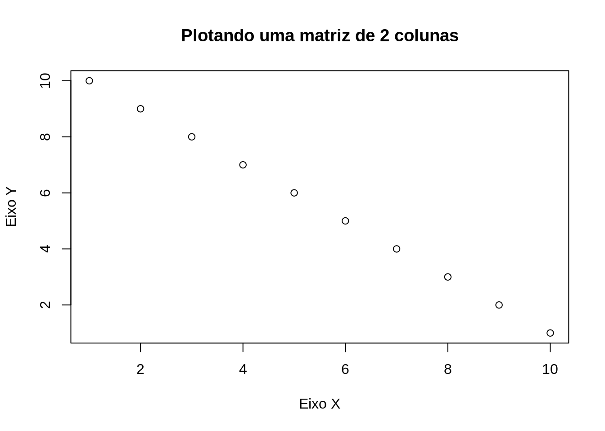
Podemos também especificar separadamente os eixos x e y, utilizando os vetores xx e yy, utilizados para compor a matriz mm:
# ou poderia especificar diretamente os eixos xx e yy sem usar a matriz
plot(xx, yy, xlab = "Eixo X", ylab = "Eixo Y", main = "Plotando uma matriz de 2 colunas", pch = 21, bg = "purple")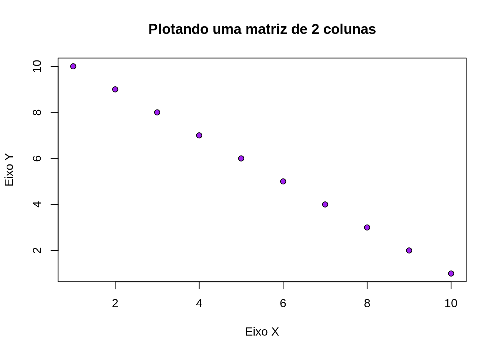
Se temos um conjunto de dados e queremos ver a relação entre si de todas as colunas do conjunto, podemos simplesmente usar:
class(iris) # um conjunto de dados no formato data.frame## [1] "data.frame"plot(iris)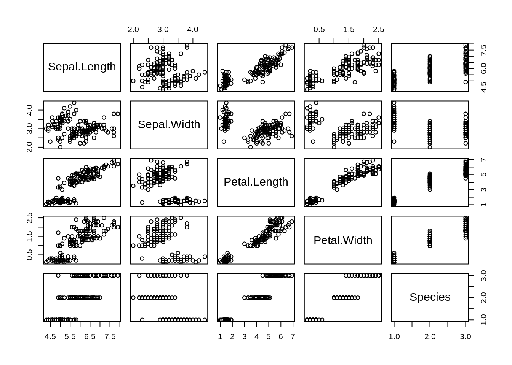
# o nome dos eixos está na diagonal dessa figura5.4.2 hist()
Esta importante função serve para visualizar a variação de uma variável apenas.
?hist # veja o helpVamos utilizar apenas a variável Sepal.Length do conjunto de dados iris:
class(iris$Sepal.Length) # é um vetor## [1] "numeric"hist(iris$Sepal.Length, xlab = "Comprimento de sépala (cm)", main = "Variação em Iris")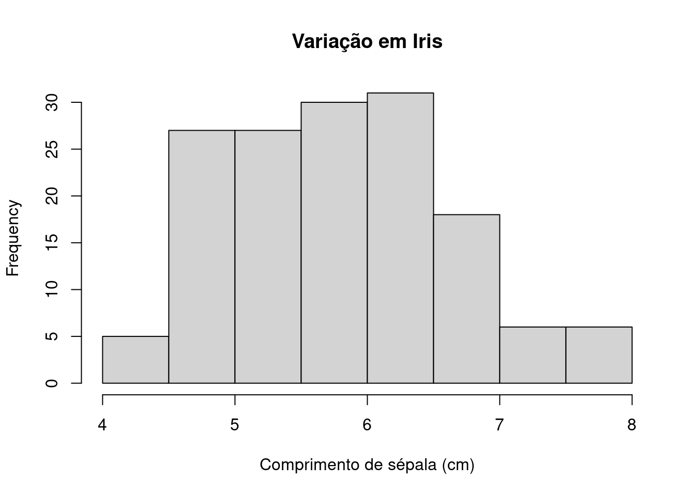 Vamos diminuir os espaçamentos entre as barras e colorí-las:
# diminuindo os espaçamentos entre as barras e colorindo
hist(iris$Sepal.Length, xlab = "Comprimento de sépala (cm)", main = "Variação em Iris", breaks = 20, col = "red")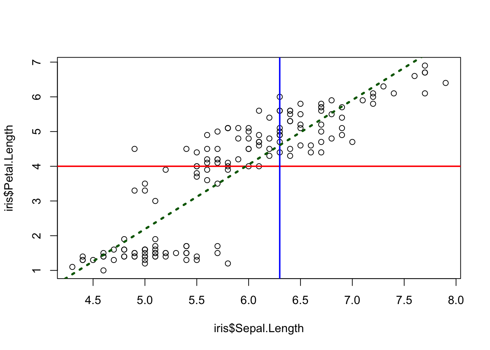
# note que o eixo y é a frequencia que o valor ocorre, ou seja, corresponde ao número de linhas em iris que tem valor5.4.3 boxplot()
Esta função é importante por mostrar a variação em uma variável qualquer em relação às categorias de um fator. É uma das melhores formas gráficas para mostrar a distribuição de valores de uma variável em relação às categorias.
?boxplot# vamos usar o objeto iris
class(iris$Sepal.Length) # é um vetor## [1] "numeric"class(iris$Species) # é um fator## [1] "factor"boxplot(iris$Sepal.Length ~ iris$Species, ylab = "Comprimento da sépala")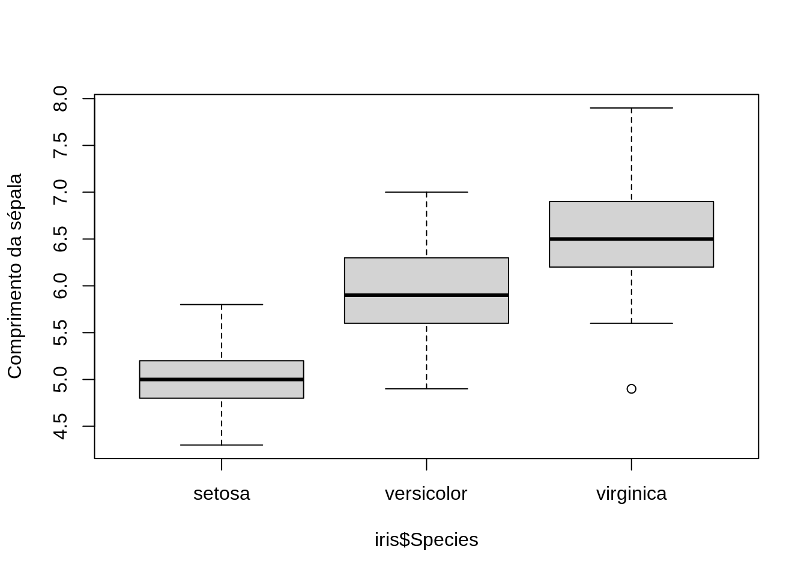
# você pode fazer a mesma coisa com a função plot() porque ela é genérica que irá reconhecer que sua fórmula 'valores~fator' pede por um boxplot
plot(iris$Sepal.Length ~ iris$Species, ylab = "Comprimento da sépala", xlab = "") # note que especificamos aqui que o eixo x não tem título (lab)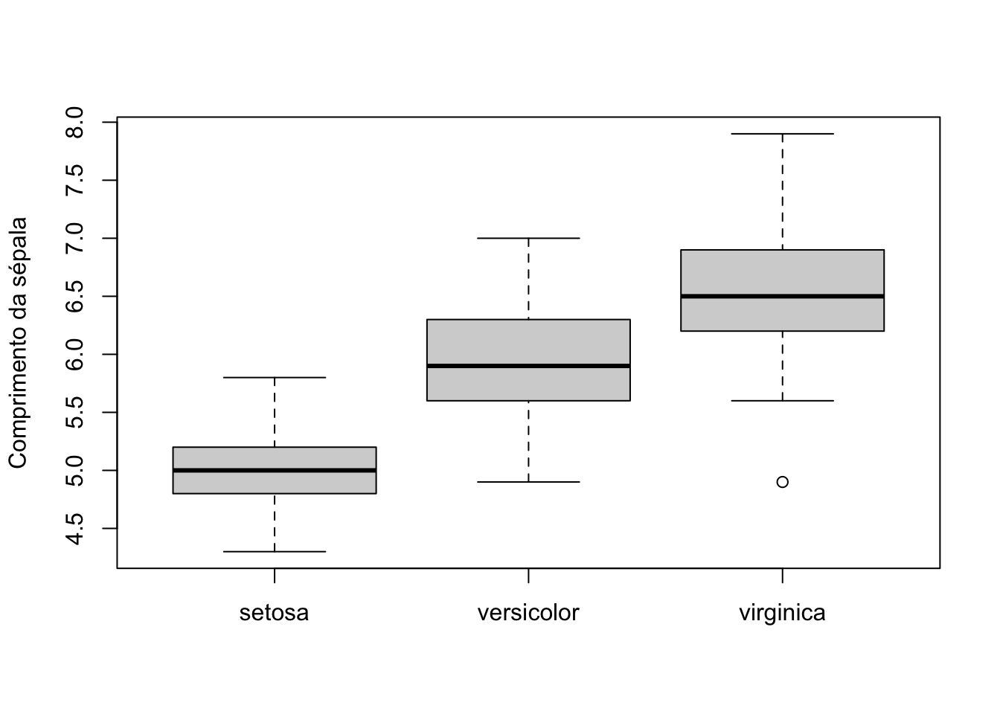
5.4.4 barplot()
Esta função gera um gráfico de barras simples.
?barplot # veja o help dessa função
?VADeaths # veja o help desse conjunto de dadosclass(VADeaths)## [1] "matrix" "array"VADeaths # taxas de mortalidade/1000 habitantes no estado da Virgínia em 1940| Rural Male | Rural Female | Urban Male | Urban Female | |
|---|---|---|---|---|
| 50-54 | 11.7 | 8.7 | 15.4 | 8.4 |
| 55-59 | 18.1 | 11.7 | 24.3 | 13.6 |
| 60-64 | 26.9 | 20.3 | 37.0 | 19.3 |
| 65-69 | 41.0 | 30.9 | 54.6 | 35.1 |
| 70-74 | 66.0 | 54.3 | 71.1 | 50.0 |
rownames(VADeaths) # cada linha é uma classe de idade## [1] "50-54" "55-59" "60-64" "65-69" "70-74"colnames(VADeaths) # cada coluna é sexo e cidade ou rural## [1] "Rural Male" "Rural Female" "Urban Male" "Urban Female"# com as informações padrão
barplot(VADeaths) # cada cor é uma linhabarplot(VADeaths, beside = TRUE) # lado a lado (cada barra é uma linha)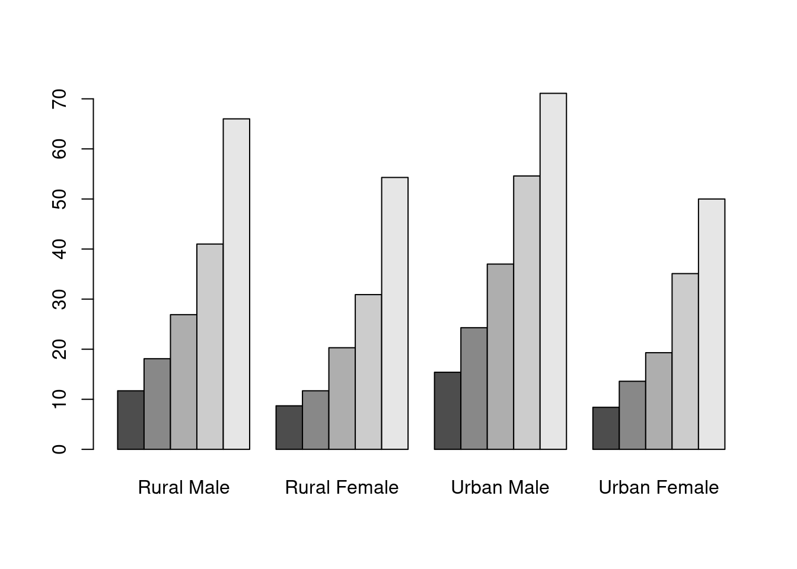
# vamos colorir diferente, uma para cada linha
rownames(VADeaths)## [1] "50-54" "55-59" "60-64" "65-69" "70-74"cores <- rainbow(n = nrow(VADeaths))
cores # uma cor por linha## [1] "#FF0000" "#CCFF00" "#00FF66" "#0066FF" "#CC00FF"# essa é a correspondencia:
cbind(rownames(VADeaths), cores)| cores | |
|---|---|
| 50-54 | #FF0000 |
| 55-59 | #CCFF00 |
| 60-64 | #00FF66 |
| 65-69 | #0066FF |
| 70-74 | #CC00FF |
# plota com essas cores
barplot(VADeaths, beside = TRUE, col = cores)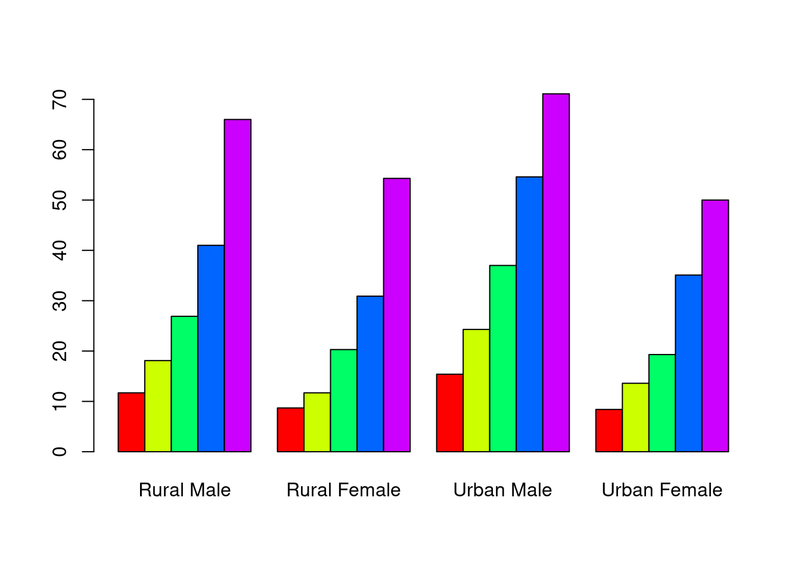
5.4.5 plot.phylo()
O pacote Ape (Analyses of Phylogenetics and Evolution) (Paradis et al. 2020) possui uma função para desenhar uma filogenia.
Caso você não tenha instalado o pacote ape ainda, faça-o assim:
install.packages("ape")Depois, siga o exemplo abaixo:
library(ape) # chama o pacote
# uma filogenia hipotética para exemplo
arv <- "(((A:1,B:1):2,C:3):0.5,((D:0.5,E:0.5):1,F:1.5):2);"
# lê essa filogenia para um objeto de classe phylo, que é uma classe para dendrogramas.
phy <- read.tree(text = arv)
class(phy)## [1] "phylo"# podemos plotar essa filogenia com
plot(phy)
# porque a função plot reconhece
# que objetos de classe "phylo" são árvores
# de fato ela usa a função plot.phylo() para gerar essa figura, que contém argumentos específicos para objetos dessa classe?plot.phylo # veja o help e os argumentos# portanto posso incluir argumentos de plot.phylo() quando uso a função plot() para plotar um objeto de classe phylo
plot(phy, no.margin = TRUE, tip.color = c(rep("red", 3), rep("blue", 3)))
# seria o mesmo que dizer
plot.phylo(phy, no.margin = TRUE, tip.color = c(rep("red", 3), rep("blue", 3)))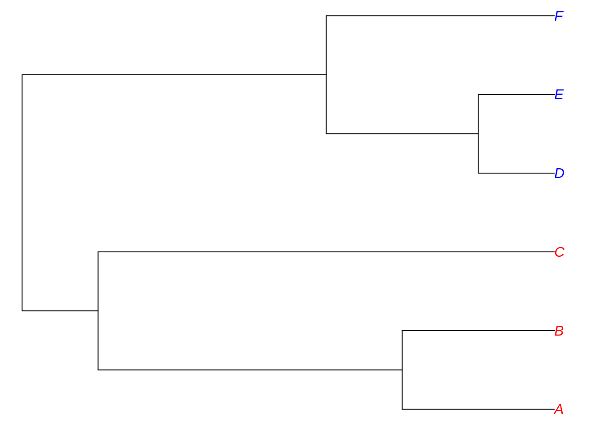
5.4.6 image() e countour()
# existe um conjunto de dados topográficos na base do R que vamos usar como exemplo
class(volcano) # é uma matriz
dim(volcano) # com 87 linhas e 61 uma colnas
volcano[1:5, 1:5] # os valores são altitude
hist(volcano, breaks = 20) # essa é a distribuição de valores de elevacao
range(volcano) # amplitude de variação# podemos usar algumas funções para visualizar um conjunto de dados que tem essa estrutura (matrix)
?image # veja o helpimage(volcano, col = heat.colors(12))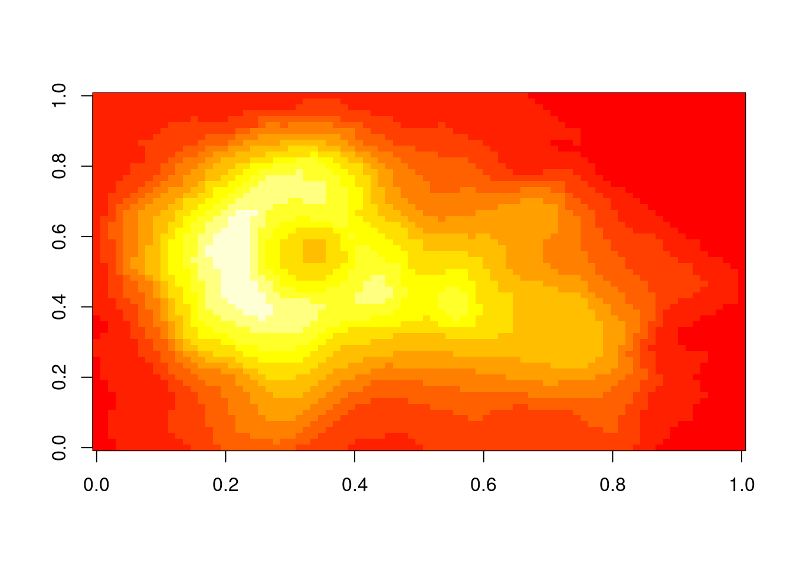
?heat.colors # veja opções de gradientes continuos de cores# vamos mudar isso,
cores <- terrain.colors(12) # 12 categorias de cores
cores # o código é uma cor em HTML## [1] "#00A600" "#24B300" "#4CBF00" "#7ACC00" "#ADD900" "#E6E600" "#E8C727"
## [8] "#EAB64E" "#ECB176" "#EEB99F" "#F0CFC8" "#F2F2F2"image(volcano, col = cores)
# notem a cratera?contour # veja o help# outra opção é fazermos os contornos (ou curvas de nível neste caso do vulcão)
contour(volcano)
# vamos mudar o número de níveis para o mesmo usado para as cores
contour(volcano, nlevels = 12)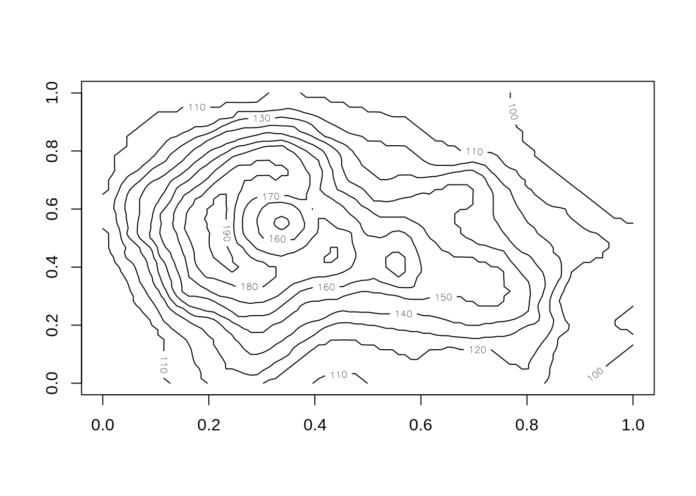
# vamos juntar essas figuras em uma só
image(volcano, col = cores)
contour(volcano, nlevels = 12, add = TRUE)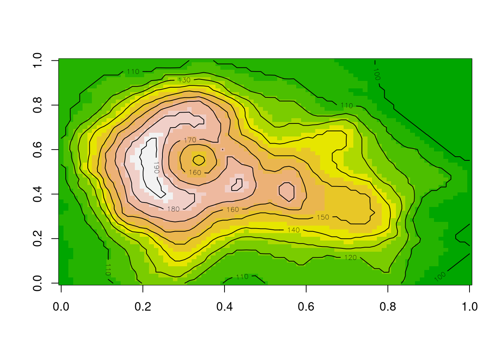
# note o argumento add=TRUE que indica para a função de alto-nível
# que ela não deve começar uma nova figura,
# apenas adiciona à uma já criada por outra função de alto-nível
# muitas funções de alto-nível tem esse argumento add, que, portanto, mimetiza o que função gráfica de baixo-nível faz5.4.7 map()
O pacote maps (Brownrigg 2018) fornece funções para desenhar mapas com divisões administrativas.
A função map() é uma de alto-nível.
Veremos depois como adicionar sobre esses mapas informação através de funções de baixo-nível.
?maps::map # veja o helpCaso você não tenha instalado o pacote maps ainda, faça-o assim:
install.packages("maps")Agora, siga o exemplo abaixo:
library(maps) # instalar se não tiver instalado
map() # mapa do mundo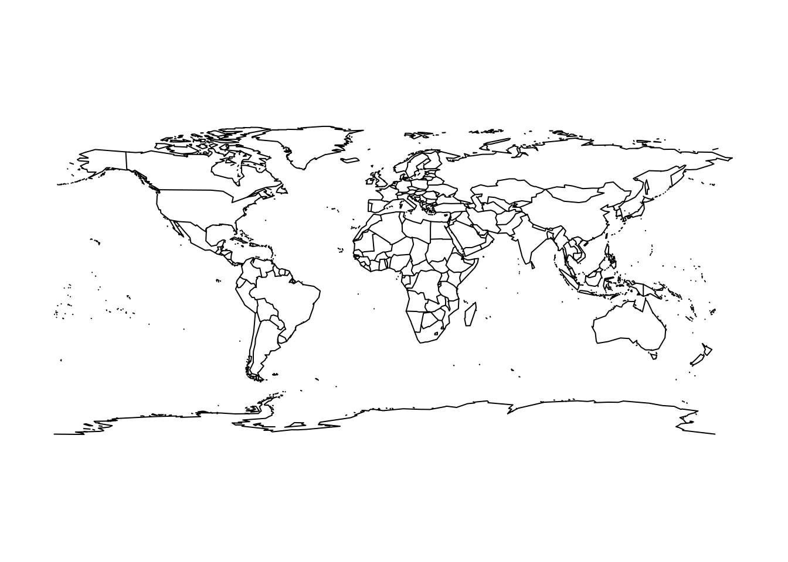
map(region = "Brazil") # Brazil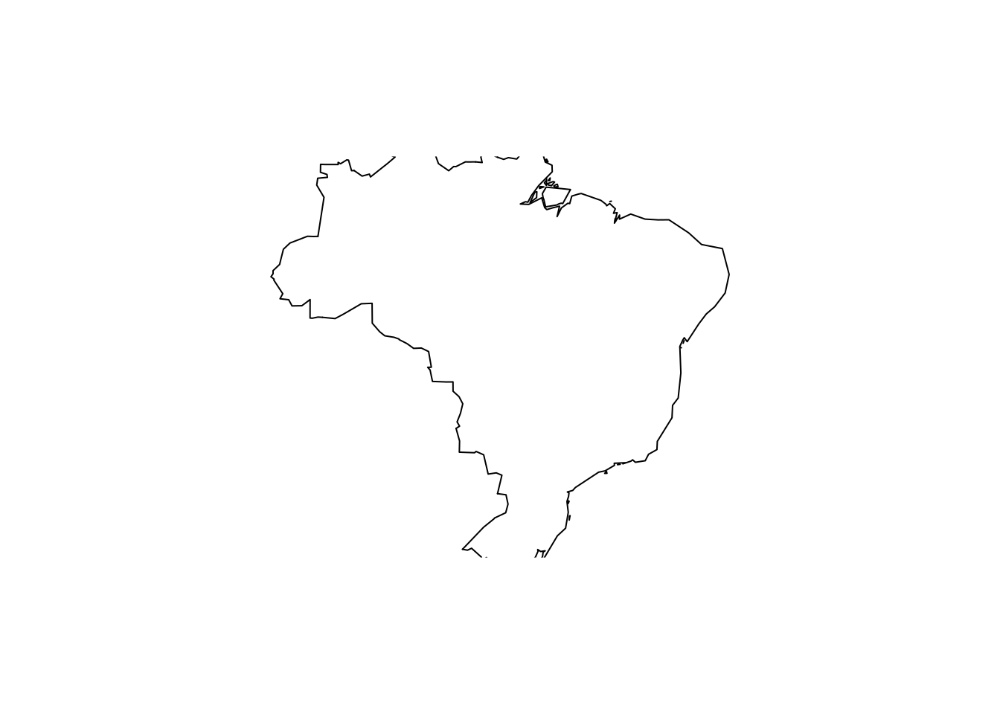
# dev.off() #pode precisar fechar o dispositivo se estiver avisar que a figura é muito grande
dev.off()## null device
## 1sa <- c("Brazil", "Guyana", "French Guiana", "Suriname", "Venezuela", "Colombia", "Ecuador", "Trinidad-Tobago", "Peru", "Bolivia", "Paraguay", "Chile", "Argentina", "Uruguay", "Panama")
map(region = sa, col = "red", lty = "dashed")5.4.8 xlim e ylim
Esses dois parâmetros gráficos permitem ajustar o tamanho dos eixos de um gráfico, impondo limites.
# CONTROLANDO UM XLIM
plot(iris$Sepal.Length, iris$Sepal.Width, pch = 21, col = "red")
# vamos aumentar um pouco o eixo X
rg <- range(iris$Sepal.Length) # variacao atual
rg
# aumentar
rg2 <- rg + c(-1, +1) # adicionamos 1 unidade de cada lado
rg2
plot(iris$Sepal.Length, iris$Sepal.Width, pch = 21, col = "red", xlim = rg2)
# LIMITANDO UM MAPA POR SUAS COORDENADAS
dev.off()
library(maps) # instalar se não tiver instalado
map() # mapa do mundo
# alguns limites em latitude e longitude
lat0 <- -22
lat1 <- 5
long0 <- -80
long1 <- -30
dev.off()
map(xlim = c(long0, long1), ylim = c(lat0, lat1))5.5 Funções gráficas de baixo nível
Funções de baixo nível são funções que permitem ADICIONAR elementos em um gráfico já aberto com as funções plot() ou plot.new().
Muitas vezes você pode usar uma função de alto nível para fazer a mesma coisa com o argumento add = TRUE.
Vamos ver alguns exemplos mais comumente utilizados de funções de baixo-nível.
5.5.1 legend()
A função legend() permite colocar uma legenda sobre um gráfico aberto por uma função de alto nível.
?legend # veja o help dessa funcao
# vamos usar iris novamenteSepalas <- iris$Sepal.Length
Petalas <- iris$Petal.Length
nlevels(iris$Species) # contém três espécies## [1] 3levels(iris$Species)## [1] "setosa" "versicolor" "virginica"ascores <- c("red", "blue", "green")[as.numeric(iris$Species)]
# plota a figura
plot(Sepalas, Petalas, pch = 21, bg = ascores, cex = 0.8)
# vamos colocar uma legenda no canto direito inferior
# definimos o que vai na legenda
cores <- c("red", "blue", "green")
texto <- levels(iris$Species)
legend("bottomright", legend = texto, pt.bg = cores, pch = 21)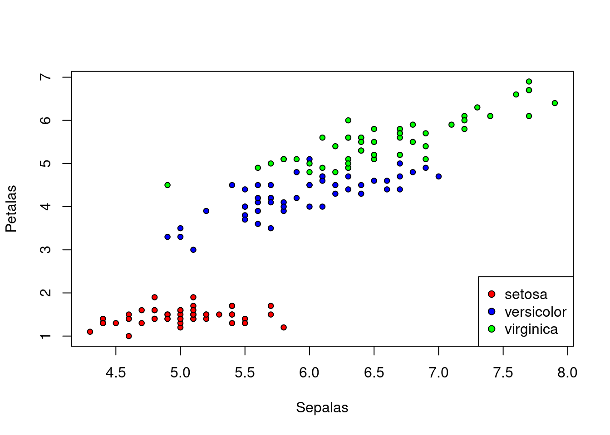
# ficou apertado né...
# aumentar o espacamento, colocar mais para dentro e tirar o box, diminuir o texto, aumentar o tamanho do ponto
# plota a figura
plot(Sepalas, Petalas, pch = 21, bg = ascores, cex = 0.8)
legend("bottomright", legend = texto, pt.bg = cores, pch = 21, y.intersp = 1.7, inset = 0.1, box.lwd = 0, cex = 0.8, pt.cex = 1.5)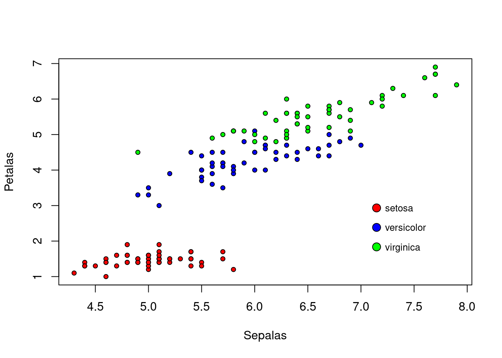
# podemos colocar legendas também pela coordenada
plot(Sepalas, Petalas, pch = 21, bg = ascores, cex = 0.8)
legend(x = 7, y = 3, legend = texto, pt.bg = cores, pch = 21, y.intersp = 1.7, inset = 0.1, box.lwd = 0, cex = 0.8, pt.cex = 1.5)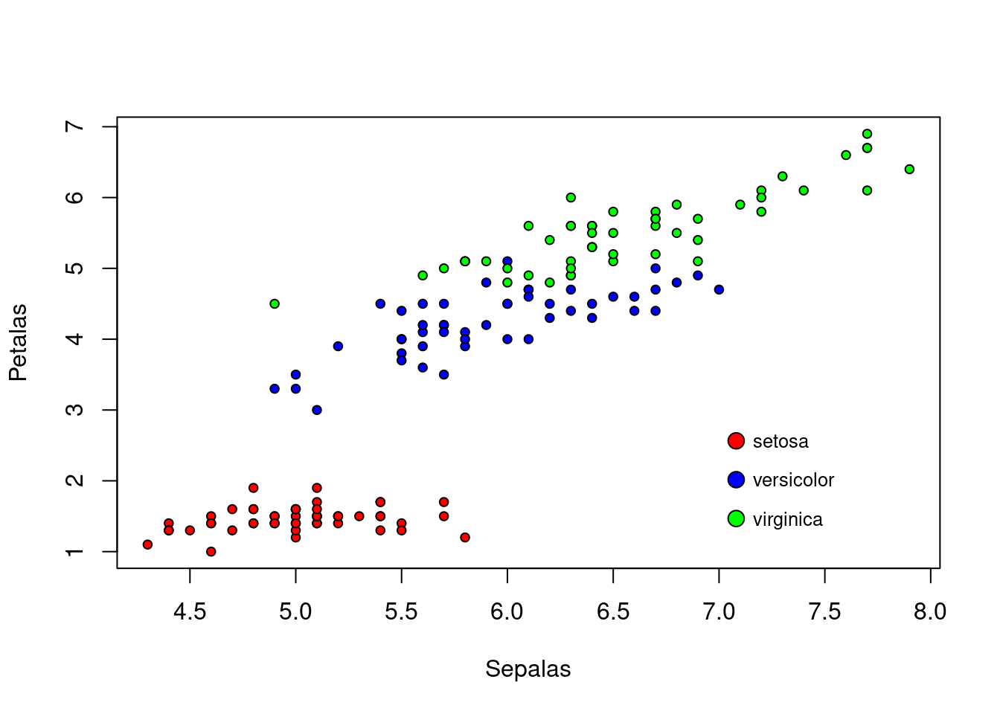
# ou colocar fora da figura
# neste caso, primeiro dividimos o dispositivo em tres partes e plotamos a figura em 2 partes e a legenda em 1 parte
layout(matrix(c(1, 1, 2), nrow = 1, ncol = 3))
plot(Sepalas, Petalas, pch = 21, bg = ascores, cex = 0.8)
# usamos a função plot.new() para mudar de parte no dispositivo cirando um plot vazio
plot.new() # nao vai ver nada acontecendo
# agora plotamos a legenda nesse espaço
legend("left", legend = texto, pt.bg = cores, pch = 21, y.intersp = 1.7, inset = 0.1, box.lwd = 0, cex = 0.8, pt.cex = 1.5)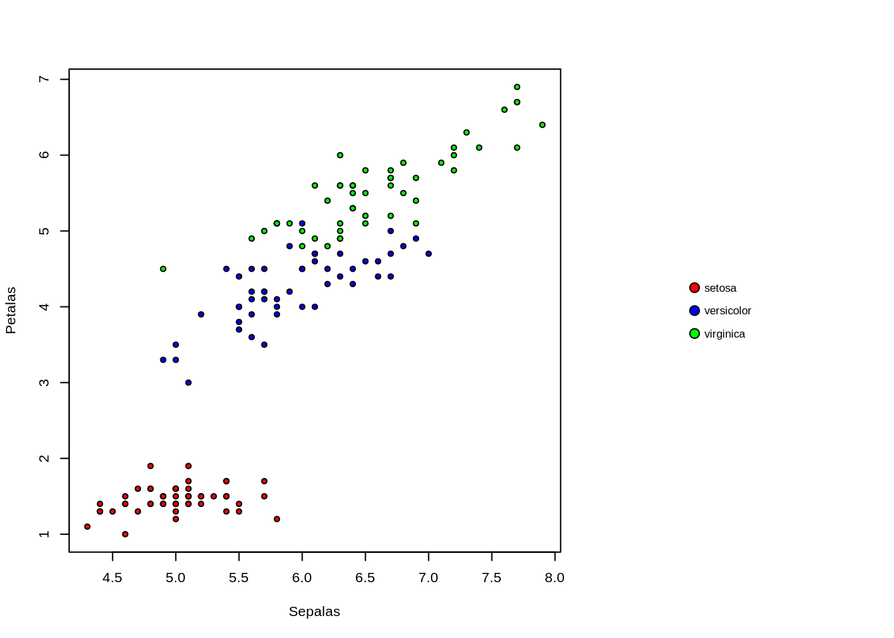
5.5.2 points()
Esta função genérica serve para adicionar pontos, linhas, simbolos etc, segundo coordenadas x ou x+y em um gráfico aberto por uma função de alto nível.
layout(1) # restaurando para 1 se fez o script acima
# vamos usar um conjunto de dados de crescimento de laranja
data("Orange")
colnames(Orange) # número da árvore, idade, circunferencia nessa idade## [1] "Tree" "age" "circumference"head(Orange)| Tree | age | circumference |
|---|---|---|
| 1 | 118 | 30 |
| 1 | 484 | 58 |
| 1 | 664 | 87 |
| 1 | 1004 | 115 |
| 1 | 1231 | 120 |
| 1 | 1372 | 142 |
unique(Orange$Tree) # tem cinco árvores## [1] 1 2 3 4 5
## Levels: 3 < 1 < 5 < 2 < 4# vamos plotar idade por circunferencia
# uma linha por árvore
# cada linha de um tipo e cor diferente
# definir tipos de linhas e cores
ascores <- c("red", "blue", "green", "yellow", "purple")
linhatipos <- c("solid", "dashed", "dotted", "dotdash", "longdash")
# uma cor por árvore
treeidx <- as.numeric(Orange$Tree)
cls <- ascores[treeidx]
cls## [1] "blue" "blue" "blue" "blue" "blue" "blue" "blue" "yellow"
## [9] "yellow" "yellow" "yellow" "yellow" "yellow" "yellow" "red" "red"
## [17] "red" "red" "red" "red" "red" "purple" "purple" "purple"
## [25] "purple" "purple" "purple" "purple" "green" "green" "green" "green"
## [33] "green" "green" "green"# um tipo de linha por arvore
tps <- linhatipos[treeidx]
tps## [1] "dashed" "dashed" "dashed" "dashed" "dashed" "dashed"
## [7] "dashed" "dotdash" "dotdash" "dotdash" "dotdash" "dotdash"
## [13] "dotdash" "dotdash" "solid" "solid" "solid" "solid"
## [19] "solid" "solid" "solid" "longdash" "longdash" "longdash"
## [25] "longdash" "longdash" "longdash" "longdash" "dotted" "dotted"
## [31] "dotted" "dotted" "dotted" "dotted" "dotted"# fazemos uma figura
plot(Orange$age, Orange$circumference, lwd = 1, type = "b", col = cls, lty = tps)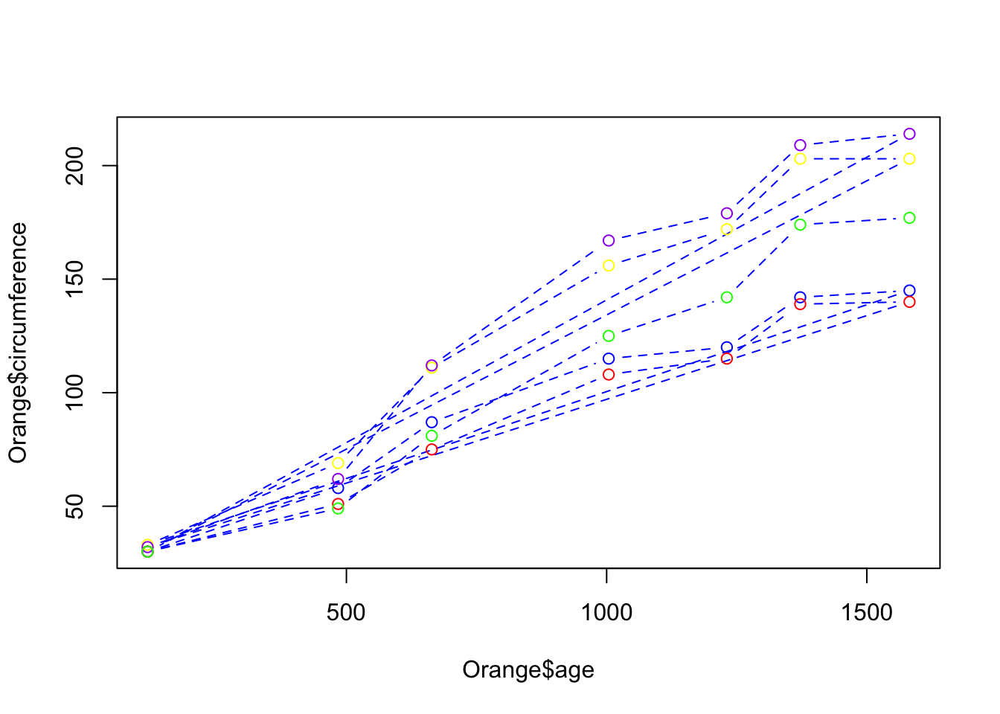
# note que todas as linhas sairam com primeira cor e com o primeiro tipo
cls[1]## [1] "blue"tps[1]## [1] "dashed"# nao dá para fazer assim, porque não especificamos como os pontos se ligam
# podemos no entanto colocar linha por linha
# desenhamos o gráfico com uma função de alto nível com os dados, mas vazia
plot(Orange$age, Orange$circumference, type = "n", xlab = "Idade", ylab = "Circunferência")
# adicionamo para cada árvore os pontos e as linhas
arvs <- as.numeric(levels(Orange$Tree))
pts <- arvs + 20 # simbolos para pontos
i <- 1
for (i in 1:length(arvs)) { # para cada arvore
# filtra os dados
dd <- Orange[Orange$Tree == arvs[i], ]
# adiciona no gráfico aberto a linha e os pontos e uma vez (type='b', veja o argumento type)
points(dd$age, dd$circumference, type = "b", pch = pts[arvs[i]], lty = linhatipos[arvs[i]], lwd = 1, col = ascores[arvs[i]], bg = ascores[arvs[i]])
}
# vamos adicionar uma legenda
txt <- paste("tree", arvs)
legend("bottomright", inset = 0.1, box.lwd = 0, legend = txt, pch = pts[arvs], pt.bg = ascores[arvs], lty = linhatipos[arvs], col = ascores[arvs], y.intersp = 1.5)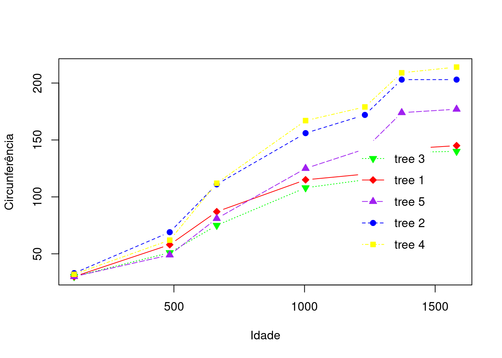
5.5.3 text() e mtext()
text() e mtext()- funções para plotar textos (>= 1 caracter de comprimento) sobre uma figura de alto nível. text() plota dentro da área da figura através de coordendas, mtext() plota fora da área da figura com indicação do lado (side) e da distância da linha dos eixos (line).
?text # veja o help dessa função
# vamos usar iris novamenteSepalas <- iris$Sepal.Length
Petalas <- iris$Petal.Length
nlevels(iris$Species) # contém três espécies## [1] 3levels(iris$Species)## [1] "setosa" "versicolor" "virginica"ascores <- c("red", "blue", "green")[as.numeric(iris$Species)]
# vamos dar um código de texto para cada especie (suas primeiras letras maiusculo)
levels(iris$Species)## [1] "setosa" "versicolor" "virginica"spp <- toupper(substr(iris$Species, 1, 2))
spp## [1] "SE" "SE" "SE" "SE" "SE" "SE" "SE" "SE" "SE" "SE" "SE" "SE" "SE" "SE" "SE"
## [16] "SE" "SE" "SE" "SE" "SE" "SE" "SE" "SE" "SE" "SE" "SE" "SE" "SE" "SE" "SE"
## [31] "SE" "SE" "SE" "SE" "SE" "SE" "SE" "SE" "SE" "SE" "SE" "SE" "SE" "SE" "SE"
## [46] "SE" "SE" "SE" "SE" "SE" "VE" "VE" "VE" "VE" "VE" "VE" "VE" "VE" "VE" "VE"
## [61] "VE" "VE" "VE" "VE" "VE" "VE" "VE" "VE" "VE" "VE" "VE" "VE" "VE" "VE" "VE"
## [76] "VE" "VE" "VE" "VE" "VE" "VE" "VE" "VE" "VE" "VE" "VE" "VE" "VE" "VE" "VE"
## [91] "VE" "VE" "VE" "VE" "VE" "VE" "VE" "VE" "VE" "VE" "VI" "VI" "VI" "VI" "VI"
## [106] "VI" "VI" "VI" "VI" "VI" "VI" "VI" "VI" "VI" "VI" "VI" "VI" "VI" "VI" "VI"
## [121] "VI" "VI" "VI" "VI" "VI" "VI" "VI" "VI" "VI" "VI" "VI" "VI" "VI" "VI" "VI"
## [136] "VI" "VI" "VI" "VI" "VI" "VI" "VI" "VI" "VI" "VI" "VI" "VI" "VI" "VI" "VI"# plota a figura, mas ao inves de simbolos adicionamos text
# poderiamos fazer isso se spp fosse apenas 1 caractere
plot(Sepalas, Petalas, pch = spp, col = ascores, cex = 0.8)
legend("bottomright", legend = levels(iris$Species), text.col = c("red", "blue", "green"), inset = 0.1, box.lwd = 0, y.intersp = 1.5)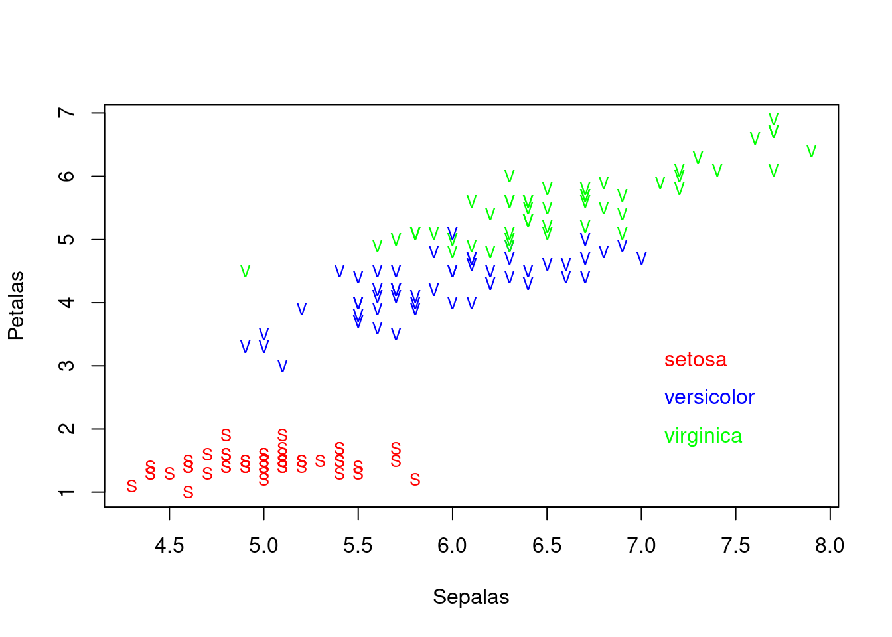
# mas note que versicolor e virginica não se diferenciam, pois pch plota apenas 1 caractere quando o simbolo for texto
# podemos, no entanto, usar a funcao text para isso
plot(Sepalas, Petalas, type = "n")
text(Sepalas, Petalas, labels = spp, col = ascores, cex = 0.8)
txt <- paste("Iris", levels(iris$Species))
legend("bottomright", legend = txt, text.col = c("red", "blue", "green"), inset = 0.1, box.lwd = 0, y.intersp = 1.5)
# posso usar essa função para adicionar qualquer texto, em qualquer coordenada
text(4.5, 6, labels = "Exemplo Iris", adj = 0, col = "yellow")
# note o argumento adj que define o ajuste do texto em relacao à coordenada x y especificada (ajuste: 0 esquerda, 1 direita)
# apenas o x
text(x = 4.5, y = 6, labels = "Exemplo Iris", adj = 1, col = "black")
# o x e o y do ajuste (dois valores em adj)
text(x = 4.5, y = 6, labels = "Exemplo Iris", adj = c(0.3, 1), col = "purple")
# a funcao mtext plot for da área das coordenas da figura
# lado superior
mtext(side = 3, text = "A.", line = 1, col = "red", font = 2, cex = 2)
# lado superior esquerdo
mtext(side = 3, text = "A.", line = 1, col = "red", font = 2, cex = 2, adj = 0)
# lado inferior direito
mtext(side = 1, text = "B.", line = 1, col = "red", font = 2, cex = 2, adj = 1)
# mais para baixo
mtext(side = 1, text = "B.", line = 2.5, col = "red", font = 2, cex = 2, adj = 1)
# lado direito superior
mtext(side = 4, text = "C.", line = 1, col = "red", font = 2, cex = 2, adj = 1)
# lado direito no meio
mtext(side = 4, text = "C.", line = 1, col = "red", font = 2, cex = 2, adj = 0.5)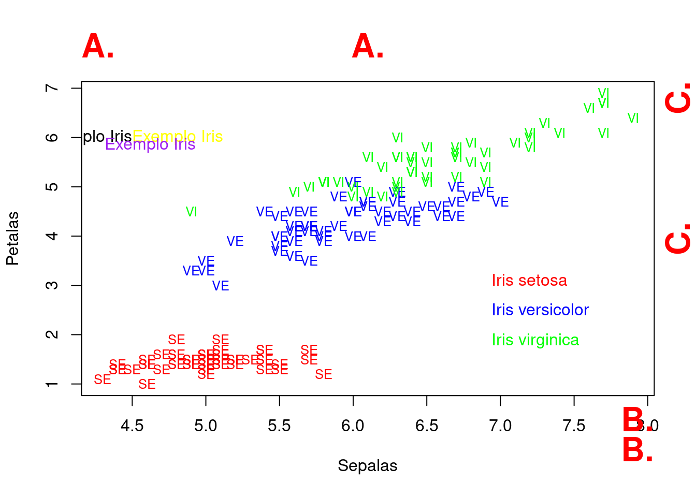
5.5.4 axis()
A função axis() adiciona eixos individualmente.
É importante quando desejamos combinar dois gráficos em um só.
?axis# algumas vezes queremos adicionar eixos, ou formatar o eixo de uma forma individualizada
# por exemplo, na seguinte figura, queremos colocar o nome das especies no eixo y em posicao horizontal
plot(iris$Sepal.Length ~ iris$Species, horizontal = TRUE)
# o argumento para isso é par(las=2)
# se mudar isso eu mudo para todos os eixos
par(las = 2)
plot(iris$Sepal.Length ~ iris$Species, horizontal = TRUE)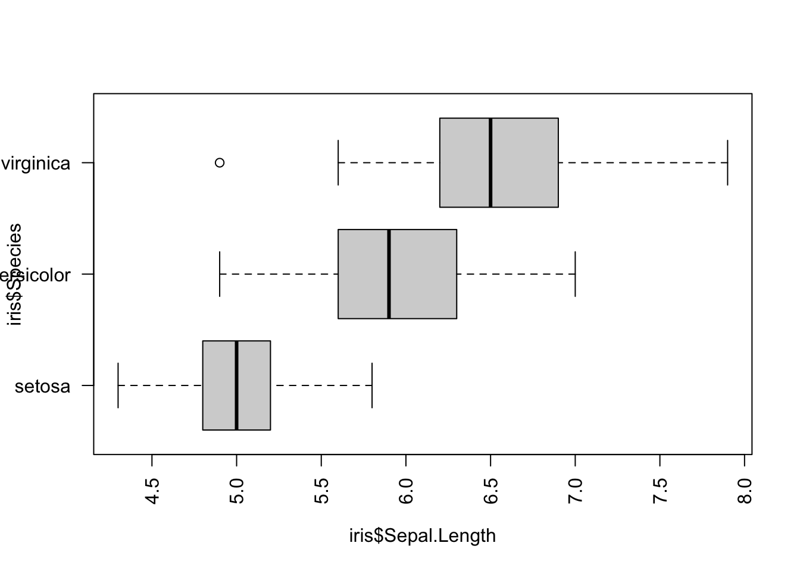
# mas eu quero apenas o eixo y
par(las = 1) # voltamos ao padrao 1
# plotamos a figura sem esse eixo
plot(iris$Sepal.Length ~ iris$Species, horizontal = TRUE, yaxt = "n")
# adicionamos o eixo y na horizontal
axis(side = 2, las = 2)# mas ele plotou números não é isso que eu quero
plot(iris$Sepal.Length ~ iris$Species, horizontal = TRUE, yaxt = "n")
# entao dizemos onde e o que queremos desenhar
axis(side = 2, at = 1:3, labels = levels(iris$Species))# vamos mudar o titulo do eixo da variavel dependente (y) e apagar das especies
plot(iris$Sepal.Length ~ iris$Species, horizontal = TRUE, yaxt = "n", ylab = "Comprimento Sépalas", xlab = "")
# entao dizemos onde e o que queremos desenhar
axis(side = 2, at = 1:3, labels = levels(iris$Species))
# também posso adicionar eixos em outras posicoes
axis(side = 3)5.5.5 abline()
Esta função plota uma linha reta sobre um gráfico, ou uma linha de ajuste de uma correlação ou regressão.
# linha sobre o eixo
?abline # permite colocar linha em regressoes ou linhas retas simplesplot(iris$Sepal.Length, iris$Petal.Length)
# um linha horizontal
abline(h = 4, col = "red", lwd = 2)
# uma linha vertical
abline(v = 6.3, col = "blue", lwd = 2)
# uma linha de uma regressao
rg <- lm(iris$Petal.Length ~ iris$Sepal.Length) # faço a regressao entre essas variaveis
abline(coef(rg), col = "darkgreen", lwd = 3, lty = "dotted") # plot pelos coeficientes5.5.6 arrows(), rect(), polygon() e segments()
Estas funções plotam flechas, retângulos, polígonos, ou segmentos de linhas sobre sobre gráficos, respectivamente.
5.5.6.1 Flechas
?arrows # veja o help# vamos criar um histograma
hist(iris$Sepal.Width, breaks = 20, col = "red")
# adicionar uma seta
arrows(x0 = 3.6, y0 = 5, x1 = 3.6, y1 = 10, lty = "solid", col = "blue")# invertendo y0 e y1, diminuindo o tamanho da seta e colocando mais grosso
hist(iris$Sepal.Width, breaks = 20, col = "red")
arrows(x0 = 3.6, y0 = 10, x1 = 3.6, y1 = 5, lty = "solid", lwd = 3, col = "blue", length = 0.1)5.5.6.2 Retângulos
?rect # veja o helpplot(1:10, 1:10, type = "n")
rect(xleft = 2, ybottom = 2, xright = 3, ytop = 4)
# com preenchimento
rect(xleft = 4, ybottom = 2, xright = 6, ytop = 4, density = 8, border = "red", col = "blue")
# com preenchimento total (density tem valor negativo (um qualquer))
rect(xleft = 7, ybottom = 2, xright = 8, ytop = 4, density = -1, border = "yellow", col = "blue", lwd = 5)5.5.7 symbols()
A função symbols() é uma de alto nível, mas com a adição do argumento add=TRUE, ela pode ser utilizada para adicionar sobre gráficos já plotados símbolos que expressam quantidades.
?symbols # ver o helpplot(1:10, 1:10, type = "n")
xx <- c(3, 5, 7, 9)
yy <- c(3, 5, 7, 9)
zz <- c(0.1, 0.3, 0.4, 1) # tamanho em unidade gráfica
symbols(xx, yy, circles = zz, bg = "red", add = T, inches = FALSE)plot(1:10, 1:10, type = "n")
symbols(xx, yy, squares = zz, bg = "blue", add = T, inches = FALSE)# agora mais complexo, expressando proporção
plot(1:10, 1:10, type = "n")
# uma matrix que com tres colunas: largura do simbolo, altura do simbolo e proporcao que simbolo deve estar preenchido
v1 <- matrix(c(1, 1, 0.2), nrow = 1, ncol = 3) # 20% cheio
# ll = rep(v1,length(xx))
symbols(xx[1], yy[1], thermometers = v1, add = T, inches = FALSE)
v2 <- matrix(c(1, 1, 0.8), nrow = 1, ncol = 3) # 80% cheio
# ll = rep(v1,length(xx))
symbols(xx[2], yy[2], thermometers = v2, add = T, inches = FALSE)
5.6 Funções gráficas interativas
5.6.1 locator()
Esta função extrai coordenadas de um gráfico.
?locator # veja o help
# fazemos um gráfico
?trees # se quiser entender esses dados
data("trees")
class(trees)
colnames(trees)
Circunferencia <- trees$Girth
Altura <- trees$Height
plot(Circunferencia, Altura, type = "p", pch = 21, bg = "red")
locator(n = 1)
# clique na figura dentro do gráfico
# veja que no console há uma lista com os valores das coordenadas x e y
# pode fazer a mesma coisa já salvando as coordendas num ojbeto. Colete 2 pontos agora, traçando uma linha entre eles
cds <- locator(n = 2, type = "l")
cds # dois valores para cada coordenada
# posso usar os valores obtidos, por exemplo para plotar uma flexa
x0 <- cds$x[1]
x1 <- cds$x[2]
y0 <- cds$y[1]
y1 <- cds$y[2]
arrows(x0, y0, x1, y1, lwd = 2, col = "red")5.6.2 identify()
Esta função identifica os pontos de um gráfico.
?identify # veja o help
# fazemos um gráfico
data("trees")
Circunferencia <- trees$Girth
Altura <- trees$Height
# plotamos vazio
plot(Circunferencia, Altura, type = "n")
ss <- sample(1:nrow(trees), 1) # um valor de indice aleatorio
# um ponto qualquer em vermelho
points(Circunferencia[ss], Altura[ss], pch = 21, cex = 1.5, bg = "red")
# o resto dos pontos em branco
points(Circunferencia[-ss], Altura[-ss], pch = 21, cex = 1.5, bg = "white")
# identificar pontos. Execute a funçào e selecione no ponto vermelho
identify(Circunferencia, Altura, n = 1, tolerance = 1)
# o numero que aparece no gráfico é o indice
# portanto, deve ser igual ao valor de
ss
trees[ss, ]5.7 Para saber mais:
(1). Vídeoaulas com conteúdos parciais deste capítulo:
(2). R Gallery - página que tem exemplos de gráficos do R e os códigos correspondentes.
5.8 Exercícios
Esta série de exercícios exemplificam algumas funções que serão retomadas no tutorial de AED (Capítulos 11, 12, 13 e 14). Procure exercitar o que aprenderam até aqui. O conjunto de dados alunos2018.txt será utilizado na maioria dos exercícios listados abaixo:
- Resolva o exercício 302.02 Histogramas (frequência).
- Resolva o exercício 302.07 Gráficos com trechos selecionados do data.frame/matriz.
- Resolva o exercício 302.04 Box-plots.
- Resolva o exercício 302.05 Gráficos de dispersão.
- Resolva o exercício 302.06 Matriz de dispersão.
- Resolva o exercício Editando parâmetros gráficos.
Referências
Valores do argumento
pchvariam de 0 a 25; veja o?da funçãopoints()para saber quais são esses símbolos↩︎